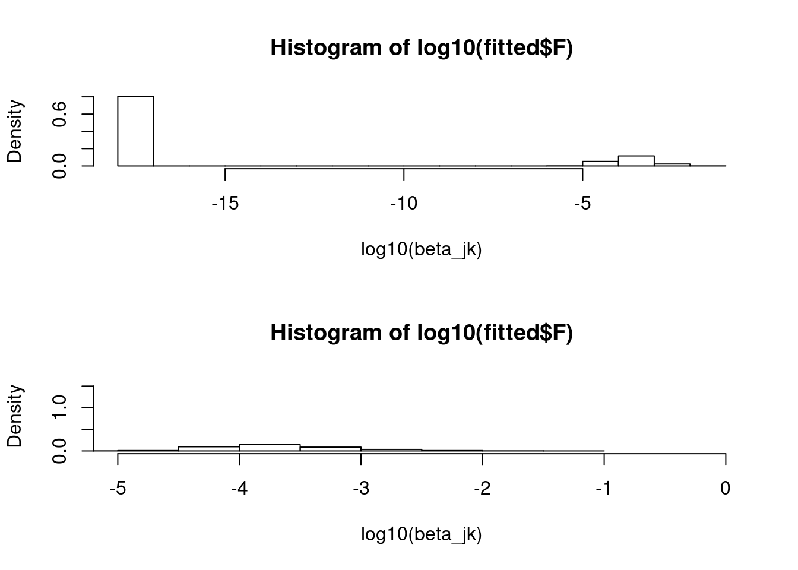

Last updated: 2021-07-05
Checks: 7 0
Knit directory: ebpmf_data_analysis/
This reproducible R Markdown analysis was created with workflowr (version 1.6.2). The Checks tab describes the reproducibility checks that were applied when the results were created. The Past versions tab lists the development history.
Great! Since the R Markdown file has been committed to the Git repository, you know the exact version of the code that produced these results.
Great job! The global environment was empty. Objects defined in the global environment can affect the analysis in your R Markdown file in unknown ways. For reproduciblity it’s best to always run the code in an empty environment.
The command set.seed(20200511) was run prior to running the code in the R Markdown file. Setting a seed ensures that any results that rely on randomness, e.g. subsampling or permutations, are reproducible.
Great job! Recording the operating system, R version, and package versions is critical for reproducibility.
Nice! There were no cached chunks for this analysis, so you can be confident that you successfully produced the results during this run.
Great job! Using relative paths to the files within your workflowr project makes it easier to run your code on other machines.
Great! You are using Git for version control. Tracking code development and connecting the code version to the results is critical for reproducibility.
The results in this page were generated with repository version 5c67270. See the Past versions tab to see a history of the changes made to the R Markdown and HTML files.
Note that you need to be careful to ensure that all relevant files for the analysis have been committed to Git prior to generating the results (you can use wflow_publish or wflow_git_commit). workflowr only checks the R Markdown file, but you know if there are other scripts or data files that it depends on. Below is the status of the Git repository when the results were generated:
Ignored files:
Ignored: .Rproj.user/
Ignored: analysis/fastTopics_on_sla_cache/
Ignored: analysis/investigate_F_proj_cache/
Ignored: analysis/prepare_sla_sim_cache/
Untracked files:
Untracked: Rplot.pdf
Untracked: analysis/droplet_simulated_0.10_compare_mle_eb.Rmd
Untracked: analysis/fastTopics_on_droplet_sim.Rmd
Untracked: analysis/fastTopics_on_sla_sim.Rmd
Untracked: analysis/investigate_F_proj_cache_old/
Untracked: analysis/nb_est_mom.Rmd
Untracked: analysis/prepare_droplet.Rmd
Untracked: analysis/prepare_droplet_sim.Rmd
Untracked: analysis/prepare_sim_data.Rmd
Untracked: analysis/rank1_examples.Rmd
Untracked: code/hpmf.R
Untracked: code/mmultinom.R
Untracked: code/mmultinom_util.R
Untracked: code/smallsim3_functions.R
Untracked: data/GSE103354_Trachea_droplet_UMIcounts.txt.gz
Untracked: data/SLA/SLA_preprocessed_minzhe.RData
Untracked: data/SLA/docword.sla_minzhe.txt
Untracked: data/SLA/vocab.sla_minzhe.txt
Untracked: data/pbmc_68k/
Untracked: data/sim/droplet_simulated.Rds
Untracked: data/sim/droplet_simulated_0.10.Rds
Untracked: data/sim/droplet_simulated_0.20.Rds
Untracked: data/sim/pbmc_68k_simulated.Rds
Untracked: output/NIPS/v0.4.5/nips_ebpmf_wbg_initLF50_K20_maxiter1000.Rds
Untracked: output/NIPS/v0.4.5/nips_ebpmf_wbg_initLF50_K20_maxiter1500.Rds
Untracked: output/NIPS/v0.4.5/nips_ebpmf_wbg_initLF50_K20_maxiter2500.Rds
Untracked: output/NIPS/v0.4.5/nips_ebpmf_wbg_initLF50_K20_maxiter3000.Rds
Untracked: output/NIPS/v0.4.5/nips_ebpmf_wbg_initLF50_K20_maxiter3500.Rds
Untracked: output/NIPS/v0.4.5/nips_ebpmf_wbg_initLF50_K20_maxiter4000.Rds
Untracked: output/NIPS/v0.4.5/nips_ebpmf_wbg_initLF50_K20_maxiter4500.Rds
Untracked: output/NIPS/v0.4.5/nips_ebpmf_wbg_initLF50_K20_maxiter500.Rds
Untracked: output/NIPS/v0.4.5/nips_init_nmf_K20_iter50.Rds
Untracked: output/NIPS/v0.4.5/nips_pmf_initLF50_K20_maxiter1000.Rds
Untracked: output/NIPS/v0.4.5/nips_pmf_initLF50_K20_maxiter1500.Rds
Untracked: output/NIPS/v0.4.5/nips_pmf_initLF50_K20_maxiter2500.Rds
Untracked: output/NIPS/v0.4.5/nips_pmf_initLF50_K20_maxiter3000.Rds
Untracked: output/NIPS/v0.4.5/nips_pmf_initLF50_K20_maxiter3500.Rds
Untracked: output/NIPS/v0.4.5/nips_pmf_initLF50_K20_maxiter4000.Rds
Untracked: output/NIPS/v0.4.5/nips_pmf_initLF50_K20_maxiter4500.Rds
Untracked: output/NIPS/v0.4.5/nips_pmf_initLF50_K20_maxiter500.Rds
Untracked: output/News/v0.4.5/news_ebpmf_wbg_initLF50_K20_maxiter1000.Rds
Untracked: output/News/v0.4.5/news_ebpmf_wbg_initLF50_K20_maxiter1500.Rds
Untracked: output/News/v0.4.5/news_ebpmf_wbg_initLF50_K20_maxiter500.Rds
Untracked: output/News/v0.4.5/news_init_nmf_K20_iter50.Rds
Untracked: output/News/v0.4.5/news_pmf_initLF50_K20_maxiter1000.Rds
Untracked: output/News/v0.4.5/news_pmf_initLF50_K20_maxiter1500.Rds
Untracked: output/News/v0.4.5/news_pmf_initLF50_K20_maxiter2500.Rds
Untracked: output/News/v0.4.5/news_pmf_initLF50_K20_maxiter3000.Rds
Untracked: output/News/v0.4.5/news_pmf_initLF50_K20_maxiter3500.Rds
Untracked: output/News/v0.4.5/news_pmf_initLF50_K20_maxiter4000.Rds
Untracked: output/News/v0.4.5/news_pmf_initLF50_K20_maxiter4500.Rds
Untracked: output/News/v0.4.5/news_pmf_initLF50_K20_maxiter500.Rds
Untracked: output/SLA/v0.4.5/Rplots.pdf
Untracked: output/SLA/v0.4.5/correct_kl.R
Untracked: output/SLA/v0.4.5/sla_ebpmf_wbg_initLF50_K100_maxiter1000.Rds
Untracked: output/SLA/v0.4.5/sla_ebpmf_wbg_initLF50_K100_maxiter1500.Rds
Untracked: output/SLA/v0.4.5/sla_ebpmf_wbg_initLF50_K100_maxiter2500.Rds
Untracked: output/SLA/v0.4.5/sla_ebpmf_wbg_initLF50_K100_maxiter500.Rds
Untracked: output/SLA/v0.4.5/sla_ebpmf_wbg_initLF50_K10_maxiter1000.Rds
Untracked: output/SLA/v0.4.5/sla_ebpmf_wbg_initLF50_K10_maxiter1500.Rds
Untracked: output/SLA/v0.4.5/sla_ebpmf_wbg_initLF50_K10_maxiter2500.Rds
Untracked: output/SLA/v0.4.5/sla_ebpmf_wbg_initLF50_K10_maxiter3000.Rds
Untracked: output/SLA/v0.4.5/sla_ebpmf_wbg_initLF50_K10_maxiter3500.Rds
Untracked: output/SLA/v0.4.5/sla_ebpmf_wbg_initLF50_K10_maxiter4000.Rds
Untracked: output/SLA/v0.4.5/sla_ebpmf_wbg_initLF50_K10_maxiter4500.Rds
Untracked: output/SLA/v0.4.5/sla_ebpmf_wbg_initLF50_K10_maxiter500.Rds
Untracked: output/SLA/v0.4.5/sla_ebpmf_wbg_initLF50_K50_maxiter1000.Rds
Untracked: output/SLA/v0.4.5/sla_ebpmf_wbg_initLF50_K50_maxiter1500.Rds
Untracked: output/SLA/v0.4.5/sla_ebpmf_wbg_initLF50_K50_maxiter2500.Rds
Untracked: output/SLA/v0.4.5/sla_ebpmf_wbg_initLF50_K50_maxiter3000.Rds
Untracked: output/SLA/v0.4.5/sla_ebpmf_wbg_initLF50_K50_maxiter3500.Rds
Untracked: output/SLA/v0.4.5/sla_ebpmf_wbg_initLF50_K50_maxiter4000.Rds
Untracked: output/SLA/v0.4.5/sla_ebpmf_wbg_initLF50_K50_maxiter4500.Rds
Untracked: output/SLA/v0.4.5/sla_ebpmf_wbg_initLF50_K50_maxiter500.Rds
Untracked: output/SLA/v0.4.5/sla_ebpmf_wbg_initLF50_K5_maxiter1000.Rds
Untracked: output/SLA/v0.4.5/sla_ebpmf_wbg_initLF50_K5_maxiter1500.Rds
Untracked: output/SLA/v0.4.5/sla_ebpmf_wbg_initLF50_K5_maxiter2500.Rds
Untracked: output/SLA/v0.4.5/sla_ebpmf_wbg_initLF50_K5_maxiter3000.Rds
Untracked: output/SLA/v0.4.5/sla_ebpmf_wbg_initLF50_K5_maxiter3500.Rds
Untracked: output/SLA/v0.4.5/sla_ebpmf_wbg_initLF50_K5_maxiter4000.Rds
Untracked: output/SLA/v0.4.5/sla_ebpmf_wbg_initLF50_K5_maxiter4500.Rds
Untracked: output/SLA/v0.4.5/sla_ebpmf_wbg_initLF50_K5_maxiter500.Rds
Untracked: output/SLA/v0.4.5/sla_init_nmf_K100_iter50.Rds
Untracked: output/SLA/v0.4.5/sla_init_nmf_K10_iter50.Rds
Untracked: output/SLA/v0.4.5/sla_init_nmf_K50_iter50.Rds
Untracked: output/SLA/v0.4.5/sla_init_nmf_K5_iter50.Rds
Untracked: output/SLA/v0.4.5/sla_minzhe_ebpmf_wbg_initLF50_K100_maxiter1000.Rds
Untracked: output/SLA/v0.4.5/sla_minzhe_ebpmf_wbg_initLF50_K100_maxiter1500.Rds
Untracked: output/SLA/v0.4.5/sla_minzhe_ebpmf_wbg_initLF50_K100_maxiter2500.Rds
Untracked: output/SLA/v0.4.5/sla_minzhe_ebpmf_wbg_initLF50_K100_maxiter3000.Rds
Untracked: output/SLA/v0.4.5/sla_minzhe_ebpmf_wbg_initLF50_K100_maxiter3500.Rds
Untracked: output/SLA/v0.4.5/sla_minzhe_ebpmf_wbg_initLF50_K100_maxiter4000.Rds
Untracked: output/SLA/v0.4.5/sla_minzhe_ebpmf_wbg_initLF50_K100_maxiter4500.Rds
Untracked: output/SLA/v0.4.5/sla_minzhe_ebpmf_wbg_initLF50_K100_maxiter500.Rds
Untracked: output/SLA/v0.4.5/sla_minzhe_ebpmf_wbg_initLF50_K10_maxiter1000.Rds
Untracked: output/SLA/v0.4.5/sla_minzhe_ebpmf_wbg_initLF50_K10_maxiter1500.Rds
Untracked: output/SLA/v0.4.5/sla_minzhe_ebpmf_wbg_initLF50_K10_maxiter2500.Rds
Untracked: output/SLA/v0.4.5/sla_minzhe_ebpmf_wbg_initLF50_K10_maxiter3000.Rds
Untracked: output/SLA/v0.4.5/sla_minzhe_ebpmf_wbg_initLF50_K10_maxiter3500.Rds
Untracked: output/SLA/v0.4.5/sla_minzhe_ebpmf_wbg_initLF50_K10_maxiter4000.Rds
Untracked: output/SLA/v0.4.5/sla_minzhe_ebpmf_wbg_initLF50_K10_maxiter4500.Rds
Untracked: output/SLA/v0.4.5/sla_minzhe_ebpmf_wbg_initLF50_K10_maxiter50.Rds
Untracked: output/SLA/v0.4.5/sla_minzhe_ebpmf_wbg_initLF50_K10_maxiter500.Rds
Untracked: output/SLA/v0.4.5/sla_minzhe_ebpmf_wbg_initLF50_K50_maxiter1000.Rds
Untracked: output/SLA/v0.4.5/sla_minzhe_ebpmf_wbg_initLF50_K50_maxiter1500.Rds
Untracked: output/SLA/v0.4.5/sla_minzhe_ebpmf_wbg_initLF50_K50_maxiter2500.Rds
Untracked: output/SLA/v0.4.5/sla_minzhe_ebpmf_wbg_initLF50_K50_maxiter3000.Rds
Untracked: output/SLA/v0.4.5/sla_minzhe_ebpmf_wbg_initLF50_K50_maxiter3500.Rds
Untracked: output/SLA/v0.4.5/sla_minzhe_ebpmf_wbg_initLF50_K50_maxiter4000.Rds
Untracked: output/SLA/v0.4.5/sla_minzhe_ebpmf_wbg_initLF50_K50_maxiter4500.Rds
Untracked: output/SLA/v0.4.5/sla_minzhe_ebpmf_wbg_initLF50_K50_maxiter500.Rds
Untracked: output/SLA/v0.4.5/sla_minzhe_ebpmf_wbg_initLF50_K5_maxiter1000.Rds
Untracked: output/SLA/v0.4.5/sla_minzhe_ebpmf_wbg_initLF50_K5_maxiter1500.Rds
Untracked: output/SLA/v0.4.5/sla_minzhe_ebpmf_wbg_initLF50_K5_maxiter2500.Rds
Untracked: output/SLA/v0.4.5/sla_minzhe_ebpmf_wbg_initLF50_K5_maxiter3000.Rds
Untracked: output/SLA/v0.4.5/sla_minzhe_ebpmf_wbg_initLF50_K5_maxiter3500.Rds
Untracked: output/SLA/v0.4.5/sla_minzhe_ebpmf_wbg_initLF50_K5_maxiter4000.Rds
Untracked: output/SLA/v0.4.5/sla_minzhe_ebpmf_wbg_initLF50_K5_maxiter4500.Rds
Untracked: output/SLA/v0.4.5/sla_minzhe_ebpmf_wbg_initLF50_K5_maxiter500.Rds
Untracked: output/SLA/v0.4.5/sla_minzhe_init_nmf_K100_iter50.Rds
Untracked: output/SLA/v0.4.5/sla_minzhe_init_nmf_K10_iter50.Rds
Untracked: output/SLA/v0.4.5/sla_minzhe_init_nmf_K3_iter50.Rds
Untracked: output/SLA/v0.4.5/sla_minzhe_init_nmf_K50_iter50.Rds
Untracked: output/SLA/v0.4.5/sla_minzhe_init_nmf_K5_iter50.Rds
Untracked: output/SLA/v0.4.5/sla_minzhe_pmf_initLF50_K100_maxiter1000.Rds
Untracked: output/SLA/v0.4.5/sla_minzhe_pmf_initLF50_K100_maxiter1500.Rds
Untracked: output/SLA/v0.4.5/sla_minzhe_pmf_initLF50_K100_maxiter2500.Rds
Untracked: output/SLA/v0.4.5/sla_minzhe_pmf_initLF50_K100_maxiter3000.Rds
Untracked: output/SLA/v0.4.5/sla_minzhe_pmf_initLF50_K100_maxiter3500.Rds
Untracked: output/SLA/v0.4.5/sla_minzhe_pmf_initLF50_K100_maxiter4000.Rds
Untracked: output/SLA/v0.4.5/sla_minzhe_pmf_initLF50_K100_maxiter4500.Rds
Untracked: output/SLA/v0.4.5/sla_minzhe_pmf_initLF50_K100_maxiter500.Rds
Untracked: output/SLA/v0.4.5/sla_minzhe_pmf_initLF50_K10_maxiter1000.Rds
Untracked: output/SLA/v0.4.5/sla_minzhe_pmf_initLF50_K10_maxiter1500.Rds
Untracked: output/SLA/v0.4.5/sla_minzhe_pmf_initLF50_K10_maxiter2500.Rds
Untracked: output/SLA/v0.4.5/sla_minzhe_pmf_initLF50_K10_maxiter3000.Rds
Untracked: output/SLA/v0.4.5/sla_minzhe_pmf_initLF50_K10_maxiter3500.Rds
Untracked: output/SLA/v0.4.5/sla_minzhe_pmf_initLF50_K10_maxiter4000.Rds
Untracked: output/SLA/v0.4.5/sla_minzhe_pmf_initLF50_K10_maxiter4500.Rds
Untracked: output/SLA/v0.4.5/sla_minzhe_pmf_initLF50_K10_maxiter500.Rds
Untracked: output/SLA/v0.4.5/sla_minzhe_pmf_initLF50_K3_maxiter30.Rds
Untracked: output/SLA/v0.4.5/sla_minzhe_pmf_initLF50_K50_maxiter1000.Rds
Untracked: output/SLA/v0.4.5/sla_minzhe_pmf_initLF50_K50_maxiter1500.Rds
Untracked: output/SLA/v0.4.5/sla_minzhe_pmf_initLF50_K50_maxiter2500.Rds
Untracked: output/SLA/v0.4.5/sla_minzhe_pmf_initLF50_K50_maxiter3000.Rds
Untracked: output/SLA/v0.4.5/sla_minzhe_pmf_initLF50_K50_maxiter3500.Rds
Untracked: output/SLA/v0.4.5/sla_minzhe_pmf_initLF50_K50_maxiter4000.Rds
Untracked: output/SLA/v0.4.5/sla_minzhe_pmf_initLF50_K50_maxiter4500.Rds
Untracked: output/SLA/v0.4.5/sla_minzhe_pmf_initLF50_K50_maxiter500.Rds
Untracked: output/SLA/v0.4.5/sla_minzhe_pmf_initLF50_K5_maxiter1000.Rds
Untracked: output/SLA/v0.4.5/sla_minzhe_pmf_initLF50_K5_maxiter1500.Rds
Untracked: output/SLA/v0.4.5/sla_minzhe_pmf_initLF50_K5_maxiter2500.Rds
Untracked: output/SLA/v0.4.5/sla_minzhe_pmf_initLF50_K5_maxiter3000.Rds
Untracked: output/SLA/v0.4.5/sla_minzhe_pmf_initLF50_K5_maxiter3500.Rds
Untracked: output/SLA/v0.4.5/sla_minzhe_pmf_initLF50_K5_maxiter4000.Rds
Untracked: output/SLA/v0.4.5/sla_minzhe_pmf_initLF50_K5_maxiter4500.Rds
Untracked: output/SLA/v0.4.5/sla_minzhe_pmf_initLF50_K5_maxiter500.Rds
Untracked: output/SLA/v0.4.5/sla_pmf_initLF50_K100_maxiter1000.Rds
Untracked: output/SLA/v0.4.5/sla_pmf_initLF50_K100_maxiter1500.Rds
Untracked: output/SLA/v0.4.5/sla_pmf_initLF50_K100_maxiter2500.Rds
Untracked: output/SLA/v0.4.5/sla_pmf_initLF50_K100_maxiter3000.Rds
Untracked: output/SLA/v0.4.5/sla_pmf_initLF50_K100_maxiter3500.Rds
Untracked: output/SLA/v0.4.5/sla_pmf_initLF50_K100_maxiter4000.Rds
Untracked: output/SLA/v0.4.5/sla_pmf_initLF50_K100_maxiter4500.Rds
Untracked: output/SLA/v0.4.5/sla_pmf_initLF50_K100_maxiter500.Rds
Untracked: output/SLA/v0.4.5/sla_pmf_initLF50_K10_maxiter1000.Rds
Untracked: output/SLA/v0.4.5/sla_pmf_initLF50_K10_maxiter1500.Rds
Untracked: output/SLA/v0.4.5/sla_pmf_initLF50_K10_maxiter2500.Rds
Untracked: output/SLA/v0.4.5/sla_pmf_initLF50_K10_maxiter3000.Rds
Untracked: output/SLA/v0.4.5/sla_pmf_initLF50_K10_maxiter3500.Rds
Untracked: output/SLA/v0.4.5/sla_pmf_initLF50_K10_maxiter4000.Rds
Untracked: output/SLA/v0.4.5/sla_pmf_initLF50_K10_maxiter4500.Rds
Untracked: output/SLA/v0.4.5/sla_pmf_initLF50_K10_maxiter500.Rds
Untracked: output/SLA/v0.4.5/sla_pmf_initLF50_K50_maxiter1000.Rds
Untracked: output/SLA/v0.4.5/sla_pmf_initLF50_K50_maxiter1500.Rds
Untracked: output/SLA/v0.4.5/sla_pmf_initLF50_K50_maxiter2500.Rds
Untracked: output/SLA/v0.4.5/sla_pmf_initLF50_K50_maxiter3000.Rds
Untracked: output/SLA/v0.4.5/sla_pmf_initLF50_K50_maxiter3500.Rds
Untracked: output/SLA/v0.4.5/sla_pmf_initLF50_K50_maxiter4000.Rds
Untracked: output/SLA/v0.4.5/sla_pmf_initLF50_K50_maxiter4500.Rds
Untracked: output/SLA/v0.4.5/sla_pmf_initLF50_K50_maxiter500.Rds
Untracked: output/SLA/v0.4.5/sla_pmf_initLF50_K5_maxiter1000.Rds
Untracked: output/SLA/v0.4.5/sla_pmf_initLF50_K5_maxiter1500.Rds
Untracked: output/SLA/v0.4.5/sla_pmf_initLF50_K5_maxiter2500.Rds
Untracked: output/SLA/v0.4.5/sla_pmf_initLF50_K5_maxiter3000.Rds
Untracked: output/SLA/v0.4.5/sla_pmf_initLF50_K5_maxiter3500.Rds
Untracked: output/SLA/v0.4.5/sla_pmf_initLF50_K5_maxiter4000.Rds
Untracked: output/SLA/v0.4.5/sla_pmf_initLF50_K5_maxiter4500.Rds
Untracked: output/SLA/v0.4.5/sla_pmf_initLF50_K5_maxiter500.Rds
Untracked: output/fastTopics_fit/fit__fastTopics_k.Rout
Untracked: output/fastTopics_fit/fit_data_fastTopics_k10.Rout
Untracked: output/fastTopics_fit/fit_data_fastTopics_k11.Rout
Untracked: output/fastTopics_fit/fit_data_fastTopics_k12.Rout
Untracked: output/fastTopics_fit/fit_data_fastTopics_k13.Rout
Untracked: output/fastTopics_fit/fit_data_fastTopics_k14.Rout
Untracked: output/fastTopics_fit/fit_data_fastTopics_k15.Rout
Untracked: output/fastTopics_fit/fit_data_fastTopics_k16.Rout
Untracked: output/fastTopics_fit/fit_data_fastTopics_k17.Rout
Untracked: output/fastTopics_fit/fit_data_fastTopics_k18.Rout
Untracked: output/fastTopics_fit/fit_data_fastTopics_k19.Rout
Untracked: output/fastTopics_fit/fit_data_fastTopics_k2.Rout
Untracked: output/fastTopics_fit/fit_data_fastTopics_k20.Rout
Untracked: output/fastTopics_fit/fit_data_fastTopics_k3.Rout
Untracked: output/fastTopics_fit/fit_data_fastTopics_k4.Rout
Untracked: output/fastTopics_fit/fit_data_fastTopics_k5.Rout
Untracked: output/fastTopics_fit/fit_data_fastTopics_k6.Rout
Untracked: output/fastTopics_fit/fit_data_fastTopics_k7.Rout
Untracked: output/fastTopics_fit/fit_data_fastTopics_k8.Rout
Untracked: output/fastTopics_fit/fit_data_fastTopics_k9.Rout
Untracked: output/fastTopics_fit/fit_droplet_fastTopics_k10.Rds
Untracked: output/fastTopics_fit/fit_droplet_fastTopics_k10.Rout
Untracked: output/fastTopics_fit/fit_droplet_fastTopics_k11.Rds
Untracked: output/fastTopics_fit/fit_droplet_fastTopics_k11.Rout
Untracked: output/fastTopics_fit/fit_droplet_fastTopics_k12.Rds
Untracked: output/fastTopics_fit/fit_droplet_fastTopics_k12.Rout
Untracked: output/fastTopics_fit/fit_droplet_fastTopics_k13.Rds
Untracked: output/fastTopics_fit/fit_droplet_fastTopics_k13.Rout
Untracked: output/fastTopics_fit/fit_droplet_fastTopics_k14.Rds
Untracked: output/fastTopics_fit/fit_droplet_fastTopics_k14.Rout
Untracked: output/fastTopics_fit/fit_droplet_fastTopics_k15.Rds
Untracked: output/fastTopics_fit/fit_droplet_fastTopics_k15.Rout
Untracked: output/fastTopics_fit/fit_droplet_fastTopics_k16.Rds
Untracked: output/fastTopics_fit/fit_droplet_fastTopics_k16.Rout
Untracked: output/fastTopics_fit/fit_droplet_fastTopics_k17.Rds
Untracked: output/fastTopics_fit/fit_droplet_fastTopics_k17.Rout
Untracked: output/fastTopics_fit/fit_droplet_fastTopics_k18.Rds
Untracked: output/fastTopics_fit/fit_droplet_fastTopics_k18.Rout
Untracked: output/fastTopics_fit/fit_droplet_fastTopics_k19.Rds
Untracked: output/fastTopics_fit/fit_droplet_fastTopics_k19.Rout
Untracked: output/fastTopics_fit/fit_droplet_fastTopics_k2.Rds
Untracked: output/fastTopics_fit/fit_droplet_fastTopics_k2.Rout
Untracked: output/fastTopics_fit/fit_droplet_fastTopics_k20.Rds
Untracked: output/fastTopics_fit/fit_droplet_fastTopics_k20.Rout
Untracked: output/fastTopics_fit/fit_droplet_fastTopics_k3.Rds
Untracked: output/fastTopics_fit/fit_droplet_fastTopics_k3.Rout
Untracked: output/fastTopics_fit/fit_droplet_fastTopics_k4.Rds
Untracked: output/fastTopics_fit/fit_droplet_fastTopics_k4.Rout
Untracked: output/fastTopics_fit/fit_droplet_fastTopics_k5.Rds
Untracked: output/fastTopics_fit/fit_droplet_fastTopics_k5.Rout
Untracked: output/fastTopics_fit/fit_droplet_fastTopics_k6.Rds
Untracked: output/fastTopics_fit/fit_droplet_fastTopics_k6.Rout
Untracked: output/fastTopics_fit/fit_droplet_fastTopics_k7.Rds
Untracked: output/fastTopics_fit/fit_droplet_fastTopics_k7.Rout
Untracked: output/fastTopics_fit/fit_droplet_fastTopics_k8.Rds
Untracked: output/fastTopics_fit/fit_droplet_fastTopics_k8.Rout
Untracked: output/fastTopics_fit/fit_droplet_fastTopics_k9.Rds
Untracked: output/fastTopics_fit/fit_droplet_fastTopics_k9.Rout
Untracked: output/fastTopics_fit/fit_droplet_simualted_0.10_ebpmf_wbg_init_truth_k10.Rds
Untracked: output/fastTopics_fit/fit_droplet_simualted_0.10_ebpmf_wbg_init_truth_k10.Rds.out
Untracked: output/fastTopics_fit/fit_droplet_simualted_0.10_ebpmf_wbg_init_truth_k11.Rds
Untracked: output/fastTopics_fit/fit_droplet_simualted_0.10_ebpmf_wbg_init_truth_k11.Rds.out
Untracked: output/fastTopics_fit/fit_droplet_simualted_0.10_ebpmf_wbg_init_truth_k12.Rds
Untracked: output/fastTopics_fit/fit_droplet_simualted_0.10_ebpmf_wbg_init_truth_k12.Rds.out
Untracked: output/fastTopics_fit/fit_droplet_simualted_0.10_ebpmf_wbg_init_truth_k13.Rds
Untracked: output/fastTopics_fit/fit_droplet_simualted_0.10_ebpmf_wbg_init_truth_k13.Rds.out
Untracked: output/fastTopics_fit/fit_droplet_simualted_0.10_ebpmf_wbg_init_truth_k14.Rds
Untracked: output/fastTopics_fit/fit_droplet_simualted_0.10_ebpmf_wbg_init_truth_k14.Rds.out
Untracked: output/fastTopics_fit/fit_droplet_simualted_0.10_ebpmf_wbg_init_truth_k15.Rds
Untracked: output/fastTopics_fit/fit_droplet_simualted_0.10_ebpmf_wbg_init_truth_k15.Rds.out
Untracked: output/fastTopics_fit/fit_droplet_simualted_0.10_ebpmf_wbg_init_truth_k16.Rds
Untracked: output/fastTopics_fit/fit_droplet_simualted_0.10_ebpmf_wbg_init_truth_k16.Rds.out
Untracked: output/fastTopics_fit/fit_droplet_simualted_0.10_ebpmf_wbg_init_truth_k17.Rds
Untracked: output/fastTopics_fit/fit_droplet_simualted_0.10_ebpmf_wbg_init_truth_k17.Rds.out
Untracked: output/fastTopics_fit/fit_droplet_simualted_0.10_ebpmf_wbg_init_truth_k18.Rds
Untracked: output/fastTopics_fit/fit_droplet_simualted_0.10_ebpmf_wbg_init_truth_k18.Rds.out
Untracked: output/fastTopics_fit/fit_droplet_simualted_0.10_ebpmf_wbg_init_truth_k19.Rds
Untracked: output/fastTopics_fit/fit_droplet_simualted_0.10_ebpmf_wbg_init_truth_k19.Rds.out
Untracked: output/fastTopics_fit/fit_droplet_simualted_0.10_ebpmf_wbg_init_truth_k2.Rds
Untracked: output/fastTopics_fit/fit_droplet_simualted_0.10_ebpmf_wbg_init_truth_k2.Rds.out
Untracked: output/fastTopics_fit/fit_droplet_simualted_0.10_ebpmf_wbg_init_truth_k20.Rds.out
Untracked: output/fastTopics_fit/fit_droplet_simualted_0.10_ebpmf_wbg_init_truth_k3.Rds
Untracked: output/fastTopics_fit/fit_droplet_simualted_0.10_ebpmf_wbg_init_truth_k3.Rds.out
Untracked: output/fastTopics_fit/fit_droplet_simualted_0.10_ebpmf_wbg_init_truth_k4.Rds
Untracked: output/fastTopics_fit/fit_droplet_simualted_0.10_ebpmf_wbg_init_truth_k4.Rds.out
Untracked: output/fastTopics_fit/fit_droplet_simualted_0.10_ebpmf_wbg_init_truth_k5.Rds
Untracked: output/fastTopics_fit/fit_droplet_simualted_0.10_ebpmf_wbg_init_truth_k5.Rds.out
Untracked: output/fastTopics_fit/fit_droplet_simualted_0.10_ebpmf_wbg_init_truth_k6.Rds
Untracked: output/fastTopics_fit/fit_droplet_simualted_0.10_ebpmf_wbg_init_truth_k6.Rds.out
Untracked: output/fastTopics_fit/fit_droplet_simualted_0.10_ebpmf_wbg_init_truth_k7.Rds
Untracked: output/fastTopics_fit/fit_droplet_simualted_0.10_ebpmf_wbg_init_truth_k7.Rds.out
Untracked: output/fastTopics_fit/fit_droplet_simualted_0.10_ebpmf_wbg_init_truth_k8.Rds
Untracked: output/fastTopics_fit/fit_droplet_simualted_0.10_ebpmf_wbg_init_truth_k8.Rds.out
Untracked: output/fastTopics_fit/fit_droplet_simualted_0.10_ebpmf_wbg_init_truth_k9.Rds
Untracked: output/fastTopics_fit/fit_droplet_simualted_0.10_ebpmf_wbg_init_truth_k9.Rds.out
Untracked: output/fastTopics_fit/fit_droplet_simualted__0.10_fastTopics_init_truth_k10.Rds
Untracked: output/fastTopics_fit/fit_droplet_simualted__0.10_fastTopics_init_truth_k10.Rds.out
Untracked: output/fastTopics_fit/fit_droplet_simualted__0.10_fastTopics_init_truth_k11.Rds
Untracked: output/fastTopics_fit/fit_droplet_simualted__0.10_fastTopics_init_truth_k11.Rds.out
Untracked: output/fastTopics_fit/fit_droplet_simualted__0.10_fastTopics_init_truth_k12.Rds
Untracked: output/fastTopics_fit/fit_droplet_simualted__0.10_fastTopics_init_truth_k12.Rds.out
Untracked: output/fastTopics_fit/fit_droplet_simualted__0.10_fastTopics_init_truth_k13.Rds
Untracked: output/fastTopics_fit/fit_droplet_simualted__0.10_fastTopics_init_truth_k13.Rds.out
Untracked: output/fastTopics_fit/fit_droplet_simualted__0.10_fastTopics_init_truth_k14.Rds
Untracked: output/fastTopics_fit/fit_droplet_simualted__0.10_fastTopics_init_truth_k14.Rds.out
Untracked: output/fastTopics_fit/fit_droplet_simualted__0.10_fastTopics_init_truth_k15.Rds
Untracked: output/fastTopics_fit/fit_droplet_simualted__0.10_fastTopics_init_truth_k15.Rds.out
Untracked: output/fastTopics_fit/fit_droplet_simualted__0.10_fastTopics_init_truth_k16.Rds
Untracked: output/fastTopics_fit/fit_droplet_simualted__0.10_fastTopics_init_truth_k16.Rds.out
Untracked: output/fastTopics_fit/fit_droplet_simualted__0.10_fastTopics_init_truth_k17.Rds
Untracked: output/fastTopics_fit/fit_droplet_simualted__0.10_fastTopics_init_truth_k17.Rds.out
Untracked: output/fastTopics_fit/fit_droplet_simualted__0.10_fastTopics_init_truth_k18.Rds
Untracked: output/fastTopics_fit/fit_droplet_simualted__0.10_fastTopics_init_truth_k18.Rds.out
Untracked: output/fastTopics_fit/fit_droplet_simualted__0.10_fastTopics_init_truth_k19.Rds
Untracked: output/fastTopics_fit/fit_droplet_simualted__0.10_fastTopics_init_truth_k19.Rds.out
Untracked: output/fastTopics_fit/fit_droplet_simualted__0.10_fastTopics_init_truth_k2.Rds
Untracked: output/fastTopics_fit/fit_droplet_simualted__0.10_fastTopics_init_truth_k2.Rds.out
Untracked: output/fastTopics_fit/fit_droplet_simualted__0.10_fastTopics_init_truth_k20.Rds
Untracked: output/fastTopics_fit/fit_droplet_simualted__0.10_fastTopics_init_truth_k20.Rds.out
Untracked: output/fastTopics_fit/fit_droplet_simualted__0.10_fastTopics_init_truth_k3.Rds
Untracked: output/fastTopics_fit/fit_droplet_simualted__0.10_fastTopics_init_truth_k3.Rds.out
Untracked: output/fastTopics_fit/fit_droplet_simualted__0.10_fastTopics_init_truth_k4.Rds
Untracked: output/fastTopics_fit/fit_droplet_simualted__0.10_fastTopics_init_truth_k4.Rds.out
Untracked: output/fastTopics_fit/fit_droplet_simualted__0.10_fastTopics_init_truth_k5.Rds
Untracked: output/fastTopics_fit/fit_droplet_simualted__0.10_fastTopics_init_truth_k5.Rds.out
Untracked: output/fastTopics_fit/fit_droplet_simualted__0.10_fastTopics_init_truth_k6.Rds
Untracked: output/fastTopics_fit/fit_droplet_simualted__0.10_fastTopics_init_truth_k6.Rds.out
Untracked: output/fastTopics_fit/fit_droplet_simualted__0.10_fastTopics_init_truth_k7.Rds
Untracked: output/fastTopics_fit/fit_droplet_simualted__0.10_fastTopics_init_truth_k7.Rds.out
Untracked: output/fastTopics_fit/fit_droplet_simualted__0.10_fastTopics_init_truth_k8.Rds
Untracked: output/fastTopics_fit/fit_droplet_simualted__0.10_fastTopics_init_truth_k8.Rds.out
Untracked: output/fastTopics_fit/fit_droplet_simualted__0.10_fastTopics_init_truth_k9.Rds
Untracked: output/fastTopics_fit/fit_droplet_simualted__0.10_fastTopics_init_truth_k9.Rds.out
Untracked: output/fastTopics_fit/fit_droplet_simualted__0.20_fastTopics_init_truth_k10.Rds
Untracked: output/fastTopics_fit/fit_droplet_simualted__0.20_fastTopics_init_truth_k10.Rds.out
Untracked: output/fastTopics_fit/fit_droplet_simualted__0.20_fastTopics_init_truth_k11.Rds
Untracked: output/fastTopics_fit/fit_droplet_simualted__0.20_fastTopics_init_truth_k11.Rds.out
Untracked: output/fastTopics_fit/fit_droplet_simualted__0.20_fastTopics_init_truth_k12.Rds
Untracked: output/fastTopics_fit/fit_droplet_simualted__0.20_fastTopics_init_truth_k12.Rds.out
Untracked: output/fastTopics_fit/fit_droplet_simualted__0.20_fastTopics_init_truth_k13.Rds
Untracked: output/fastTopics_fit/fit_droplet_simualted__0.20_fastTopics_init_truth_k13.Rds.out
Untracked: output/fastTopics_fit/fit_droplet_simualted__0.20_fastTopics_init_truth_k14.Rds
Untracked: output/fastTopics_fit/fit_droplet_simualted__0.20_fastTopics_init_truth_k14.Rds.out
Untracked: output/fastTopics_fit/fit_droplet_simualted__0.20_fastTopics_init_truth_k15.Rds
Untracked: output/fastTopics_fit/fit_droplet_simualted__0.20_fastTopics_init_truth_k15.Rds.out
Untracked: output/fastTopics_fit/fit_droplet_simualted__0.20_fastTopics_init_truth_k16.Rds
Untracked: output/fastTopics_fit/fit_droplet_simualted__0.20_fastTopics_init_truth_k16.Rds.out
Untracked: output/fastTopics_fit/fit_droplet_simualted__0.20_fastTopics_init_truth_k17.Rds
Untracked: output/fastTopics_fit/fit_droplet_simualted__0.20_fastTopics_init_truth_k17.Rds.out
Untracked: output/fastTopics_fit/fit_droplet_simualted__0.20_fastTopics_init_truth_k18.Rds
Untracked: output/fastTopics_fit/fit_droplet_simualted__0.20_fastTopics_init_truth_k18.Rds.out
Untracked: output/fastTopics_fit/fit_droplet_simualted__0.20_fastTopics_init_truth_k19.Rds
Untracked: output/fastTopics_fit/fit_droplet_simualted__0.20_fastTopics_init_truth_k19.Rds.out
Untracked: output/fastTopics_fit/fit_droplet_simualted__0.20_fastTopics_init_truth_k2.Rds
Untracked: output/fastTopics_fit/fit_droplet_simualted__0.20_fastTopics_init_truth_k2.Rds.out
Untracked: output/fastTopics_fit/fit_droplet_simualted__0.20_fastTopics_init_truth_k20.Rds
Untracked: output/fastTopics_fit/fit_droplet_simualted__0.20_fastTopics_init_truth_k20.Rds.out
Untracked: output/fastTopics_fit/fit_droplet_simualted__0.20_fastTopics_init_truth_k3.Rds
Untracked: output/fastTopics_fit/fit_droplet_simualted__0.20_fastTopics_init_truth_k3.Rds.out
Untracked: output/fastTopics_fit/fit_droplet_simualted__0.20_fastTopics_init_truth_k4.Rds
Untracked: output/fastTopics_fit/fit_droplet_simualted__0.20_fastTopics_init_truth_k4.Rds.out
Untracked: output/fastTopics_fit/fit_droplet_simualted__0.20_fastTopics_init_truth_k5.Rds
Untracked: output/fastTopics_fit/fit_droplet_simualted__0.20_fastTopics_init_truth_k5.Rds.out
Untracked: output/fastTopics_fit/fit_droplet_simualted__0.20_fastTopics_init_truth_k6.Rds
Untracked: output/fastTopics_fit/fit_droplet_simualted__0.20_fastTopics_init_truth_k6.Rds.out
Untracked: output/fastTopics_fit/fit_droplet_simualted__0.20_fastTopics_init_truth_k7.Rds
Untracked: output/fastTopics_fit/fit_droplet_simualted__0.20_fastTopics_init_truth_k7.Rds.out
Untracked: output/fastTopics_fit/fit_droplet_simualted__0.20_fastTopics_init_truth_k8.Rds
Untracked: output/fastTopics_fit/fit_droplet_simualted__0.20_fastTopics_init_truth_k8.Rds.out
Untracked: output/fastTopics_fit/fit_droplet_simualted__0.20_fastTopics_init_truth_k9.Rds
Untracked: output/fastTopics_fit/fit_droplet_simualted__0.20_fastTopics_init_truth_k9.Rds.out
Untracked: output/fastTopics_fit/fit_droplet_simualted_ebpmf_wbg_k10_init_truth.Rds
Untracked: output/fastTopics_fit/fit_droplet_simualted_fastTopics_init_truth_evals.Rds
Untracked: output/fastTopics_fit/fit_droplet_simualted_fastTopics_init_truth_k10.Rds
Untracked: output/fastTopics_fit/fit_droplet_simualted_fastTopics_init_truth_k10.Rds.out
Untracked: output/fastTopics_fit/fit_droplet_simualted_fastTopics_init_truth_k10_comparison.pdf
Untracked: output/fastTopics_fit/fit_droplet_simualted_fastTopics_init_truth_k11.Rds
Untracked: output/fastTopics_fit/fit_droplet_simualted_fastTopics_init_truth_k11.Rds.out
Untracked: output/fastTopics_fit/fit_droplet_simualted_fastTopics_init_truth_k11_comparison.pdf
Untracked: output/fastTopics_fit/fit_droplet_simualted_fastTopics_init_truth_k12.Rds
Untracked: output/fastTopics_fit/fit_droplet_simualted_fastTopics_init_truth_k12.Rds.out
Untracked: output/fastTopics_fit/fit_droplet_simualted_fastTopics_init_truth_k12_comparison.pdf
Untracked: output/fastTopics_fit/fit_droplet_simualted_fastTopics_init_truth_k13.Rds
Untracked: output/fastTopics_fit/fit_droplet_simualted_fastTopics_init_truth_k13.Rds.out
Untracked: output/fastTopics_fit/fit_droplet_simualted_fastTopics_init_truth_k13_comparison.pdf
Untracked: output/fastTopics_fit/fit_droplet_simualted_fastTopics_init_truth_k14.Rds
Untracked: output/fastTopics_fit/fit_droplet_simualted_fastTopics_init_truth_k14.Rds.out
Untracked: output/fastTopics_fit/fit_droplet_simualted_fastTopics_init_truth_k14_comparison.pdf
Untracked: output/fastTopics_fit/fit_droplet_simualted_fastTopics_init_truth_k15.Rds
Untracked: output/fastTopics_fit/fit_droplet_simualted_fastTopics_init_truth_k15.Rds.out
Untracked: output/fastTopics_fit/fit_droplet_simualted_fastTopics_init_truth_k15_comparison.pdf
Untracked: output/fastTopics_fit/fit_droplet_simualted_fastTopics_init_truth_k16.Rds
Untracked: output/fastTopics_fit/fit_droplet_simualted_fastTopics_init_truth_k16.Rds.out
Untracked: output/fastTopics_fit/fit_droplet_simualted_fastTopics_init_truth_k16_comparison.pdf
Untracked: output/fastTopics_fit/fit_droplet_simualted_fastTopics_init_truth_k17.Rds
Untracked: output/fastTopics_fit/fit_droplet_simualted_fastTopics_init_truth_k17.Rds.out
Untracked: output/fastTopics_fit/fit_droplet_simualted_fastTopics_init_truth_k17_comparison.pdf
Untracked: output/fastTopics_fit/fit_droplet_simualted_fastTopics_init_truth_k18.Rds
Untracked: output/fastTopics_fit/fit_droplet_simualted_fastTopics_init_truth_k18.Rds.out
Untracked: output/fastTopics_fit/fit_droplet_simualted_fastTopics_init_truth_k18_comparison.pdf
Untracked: output/fastTopics_fit/fit_droplet_simualted_fastTopics_init_truth_k19.Rds
Untracked: output/fastTopics_fit/fit_droplet_simualted_fastTopics_init_truth_k19.Rds.out
Untracked: output/fastTopics_fit/fit_droplet_simualted_fastTopics_init_truth_k19_comparison.pdf
Untracked: output/fastTopics_fit/fit_droplet_simualted_fastTopics_init_truth_k2.Rds
Untracked: output/fastTopics_fit/fit_droplet_simualted_fastTopics_init_truth_k2.Rds.out
Untracked: output/fastTopics_fit/fit_droplet_simualted_fastTopics_init_truth_k20.Rds
Untracked: output/fastTopics_fit/fit_droplet_simualted_fastTopics_init_truth_k20.Rds.out
Untracked: output/fastTopics_fit/fit_droplet_simualted_fastTopics_init_truth_k20_comparison.pdf
Untracked: output/fastTopics_fit/fit_droplet_simualted_fastTopics_init_truth_k2_comparison.pdf
Untracked: output/fastTopics_fit/fit_droplet_simualted_fastTopics_init_truth_k3.Rds
Untracked: output/fastTopics_fit/fit_droplet_simualted_fastTopics_init_truth_k3.Rds.out
Untracked: output/fastTopics_fit/fit_droplet_simualted_fastTopics_init_truth_k3_comparison.pdf
Untracked: output/fastTopics_fit/fit_droplet_simualted_fastTopics_init_truth_k4.Rds
Untracked: output/fastTopics_fit/fit_droplet_simualted_fastTopics_init_truth_k4.Rds.out
Untracked: output/fastTopics_fit/fit_droplet_simualted_fastTopics_init_truth_k4_comparison.pdf
Untracked: output/fastTopics_fit/fit_droplet_simualted_fastTopics_init_truth_k5.Rds
Untracked: output/fastTopics_fit/fit_droplet_simualted_fastTopics_init_truth_k5.Rds.out
Untracked: output/fastTopics_fit/fit_droplet_simualted_fastTopics_init_truth_k5_comparison.pdf
Untracked: output/fastTopics_fit/fit_droplet_simualted_fastTopics_init_truth_k6.Rds
Untracked: output/fastTopics_fit/fit_droplet_simualted_fastTopics_init_truth_k6.Rds.out
Untracked: output/fastTopics_fit/fit_droplet_simualted_fastTopics_init_truth_k6_comparison.pdf
Untracked: output/fastTopics_fit/fit_droplet_simualted_fastTopics_init_truth_k7.Rds
Untracked: output/fastTopics_fit/fit_droplet_simualted_fastTopics_init_truth_k7.Rds.out
Untracked: output/fastTopics_fit/fit_droplet_simualted_fastTopics_init_truth_k7_comparison.pdf
Untracked: output/fastTopics_fit/fit_droplet_simualted_fastTopics_init_truth_k8.Rds
Untracked: output/fastTopics_fit/fit_droplet_simualted_fastTopics_init_truth_k8.Rds.out
Untracked: output/fastTopics_fit/fit_droplet_simualted_fastTopics_init_truth_k8_comparison.pdf
Untracked: output/fastTopics_fit/fit_droplet_simualted_fastTopics_init_truth_k9.Rds
Untracked: output/fastTopics_fit/fit_droplet_simualted_fastTopics_init_truth_k9.Rds.out
Untracked: output/fastTopics_fit/fit_droplet_simualted_fastTopics_init_truth_k9_comparison.pdf
Untracked: output/fastTopics_fit/fit_droplet_simulated_0.10_fastTopics_k10.Rds
Untracked: output/fastTopics_fit/fit_droplet_simulated_0.10_fastTopics_k10.Rout
Untracked: output/fastTopics_fit/fit_droplet_simulated_0.10_fastTopics_k11.Rds
Untracked: output/fastTopics_fit/fit_droplet_simulated_0.10_fastTopics_k11.Rout
Untracked: output/fastTopics_fit/fit_droplet_simulated_0.10_fastTopics_k12.Rds
Untracked: output/fastTopics_fit/fit_droplet_simulated_0.10_fastTopics_k12.Rout
Untracked: output/fastTopics_fit/fit_droplet_simulated_0.10_fastTopics_k13.Rds
Untracked: output/fastTopics_fit/fit_droplet_simulated_0.10_fastTopics_k13.Rout
Untracked: output/fastTopics_fit/fit_droplet_simulated_0.10_fastTopics_k14.Rds
Untracked: output/fastTopics_fit/fit_droplet_simulated_0.10_fastTopics_k14.Rout
Untracked: output/fastTopics_fit/fit_droplet_simulated_0.10_fastTopics_k15.Rds
Untracked: output/fastTopics_fit/fit_droplet_simulated_0.10_fastTopics_k15.Rout
Untracked: output/fastTopics_fit/fit_droplet_simulated_0.10_fastTopics_k16.Rds
Untracked: output/fastTopics_fit/fit_droplet_simulated_0.10_fastTopics_k16.Rout
Untracked: output/fastTopics_fit/fit_droplet_simulated_0.10_fastTopics_k17.Rds
Untracked: output/fastTopics_fit/fit_droplet_simulated_0.10_fastTopics_k17.Rout
Untracked: output/fastTopics_fit/fit_droplet_simulated_0.10_fastTopics_k18.Rds
Untracked: output/fastTopics_fit/fit_droplet_simulated_0.10_fastTopics_k18.Rout
Untracked: output/fastTopics_fit/fit_droplet_simulated_0.10_fastTopics_k19.Rds
Untracked: output/fastTopics_fit/fit_droplet_simulated_0.10_fastTopics_k19.Rout
Untracked: output/fastTopics_fit/fit_droplet_simulated_0.10_fastTopics_k2.Rds
Untracked: output/fastTopics_fit/fit_droplet_simulated_0.10_fastTopics_k2.Rout
Untracked: output/fastTopics_fit/fit_droplet_simulated_0.10_fastTopics_k20.Rds
Untracked: output/fastTopics_fit/fit_droplet_simulated_0.10_fastTopics_k20.Rout
Untracked: output/fastTopics_fit/fit_droplet_simulated_0.10_fastTopics_k3.Rds
Untracked: output/fastTopics_fit/fit_droplet_simulated_0.10_fastTopics_k3.Rout
Untracked: output/fastTopics_fit/fit_droplet_simulated_0.10_fastTopics_k4.Rds
Untracked: output/fastTopics_fit/fit_droplet_simulated_0.10_fastTopics_k4.Rout
Untracked: output/fastTopics_fit/fit_droplet_simulated_0.10_fastTopics_k5.Rds
Untracked: output/fastTopics_fit/fit_droplet_simulated_0.10_fastTopics_k5.Rout
Untracked: output/fastTopics_fit/fit_droplet_simulated_0.10_fastTopics_k6.Rds
Untracked: output/fastTopics_fit/fit_droplet_simulated_0.10_fastTopics_k6.Rout
Untracked: output/fastTopics_fit/fit_droplet_simulated_0.10_fastTopics_k7.Rds
Untracked: output/fastTopics_fit/fit_droplet_simulated_0.10_fastTopics_k7.Rout
Untracked: output/fastTopics_fit/fit_droplet_simulated_0.10_fastTopics_k8.Rds
Untracked: output/fastTopics_fit/fit_droplet_simulated_0.10_fastTopics_k8.Rout
Untracked: output/fastTopics_fit/fit_droplet_simulated_0.10_fastTopics_k9.Rds
Untracked: output/fastTopics_fit/fit_droplet_simulated_0.10_fastTopics_k9.Rout
Untracked: output/fastTopics_fit/fit_droplet_simulated_0.20_fastTopics_k10.Rds
Untracked: output/fastTopics_fit/fit_droplet_simulated_0.20_fastTopics_k10.Rout
Untracked: output/fastTopics_fit/fit_droplet_simulated_0.20_fastTopics_k11.Rds
Untracked: output/fastTopics_fit/fit_droplet_simulated_0.20_fastTopics_k11.Rout
Untracked: output/fastTopics_fit/fit_droplet_simulated_0.20_fastTopics_k12.Rds
Untracked: output/fastTopics_fit/fit_droplet_simulated_0.20_fastTopics_k12.Rout
Untracked: output/fastTopics_fit/fit_droplet_simulated_0.20_fastTopics_k13.Rds
Untracked: output/fastTopics_fit/fit_droplet_simulated_0.20_fastTopics_k13.Rout
Untracked: output/fastTopics_fit/fit_droplet_simulated_0.20_fastTopics_k14.Rds
Untracked: output/fastTopics_fit/fit_droplet_simulated_0.20_fastTopics_k14.Rout
Untracked: output/fastTopics_fit/fit_droplet_simulated_0.20_fastTopics_k15.Rds
Untracked: output/fastTopics_fit/fit_droplet_simulated_0.20_fastTopics_k15.Rout
Untracked: output/fastTopics_fit/fit_droplet_simulated_0.20_fastTopics_k16.Rds
Untracked: output/fastTopics_fit/fit_droplet_simulated_0.20_fastTopics_k16.Rout
Untracked: output/fastTopics_fit/fit_droplet_simulated_0.20_fastTopics_k17.Rds
Untracked: output/fastTopics_fit/fit_droplet_simulated_0.20_fastTopics_k17.Rout
Untracked: output/fastTopics_fit/fit_droplet_simulated_0.20_fastTopics_k18.Rds
Untracked: output/fastTopics_fit/fit_droplet_simulated_0.20_fastTopics_k18.Rout
Untracked: output/fastTopics_fit/fit_droplet_simulated_0.20_fastTopics_k19.Rds
Untracked: output/fastTopics_fit/fit_droplet_simulated_0.20_fastTopics_k19.Rout
Untracked: output/fastTopics_fit/fit_droplet_simulated_0.20_fastTopics_k2.Rds
Untracked: output/fastTopics_fit/fit_droplet_simulated_0.20_fastTopics_k2.Rout
Untracked: output/fastTopics_fit/fit_droplet_simulated_0.20_fastTopics_k20.Rds
Untracked: output/fastTopics_fit/fit_droplet_simulated_0.20_fastTopics_k20.Rout
Untracked: output/fastTopics_fit/fit_droplet_simulated_0.20_fastTopics_k3.Rds
Untracked: output/fastTopics_fit/fit_droplet_simulated_0.20_fastTopics_k3.Rout
Untracked: output/fastTopics_fit/fit_droplet_simulated_0.20_fastTopics_k4.Rds
Untracked: output/fastTopics_fit/fit_droplet_simulated_0.20_fastTopics_k4.Rout
Untracked: output/fastTopics_fit/fit_droplet_simulated_0.20_fastTopics_k5.Rds
Untracked: output/fastTopics_fit/fit_droplet_simulated_0.20_fastTopics_k5.Rout
Untracked: output/fastTopics_fit/fit_droplet_simulated_0.20_fastTopics_k6.Rds
Untracked: output/fastTopics_fit/fit_droplet_simulated_0.20_fastTopics_k6.Rout
Untracked: output/fastTopics_fit/fit_droplet_simulated_0.20_fastTopics_k7.Rds
Untracked: output/fastTopics_fit/fit_droplet_simulated_0.20_fastTopics_k7.Rout
Untracked: output/fastTopics_fit/fit_droplet_simulated_0.20_fastTopics_k8.Rds
Untracked: output/fastTopics_fit/fit_droplet_simulated_0.20_fastTopics_k8.Rout
Untracked: output/fastTopics_fit/fit_droplet_simulated_0.20_fastTopics_k9.Rds
Untracked: output/fastTopics_fit/fit_droplet_simulated_0.20_fastTopics_k9.Rout
Untracked: output/fastTopics_fit/fit_droplet_simulated_fastTopics_k10.Rds
Untracked: output/fastTopics_fit/fit_droplet_simulated_fastTopics_k10.Rout
Untracked: output/fastTopics_fit/fit_droplet_simulated_fastTopics_k11.Rds
Untracked: output/fastTopics_fit/fit_droplet_simulated_fastTopics_k11.Rout
Untracked: output/fastTopics_fit/fit_droplet_simulated_fastTopics_k12.Rds
Untracked: output/fastTopics_fit/fit_droplet_simulated_fastTopics_k12.Rout
Untracked: output/fastTopics_fit/fit_droplet_simulated_fastTopics_k13.Rds
Untracked: output/fastTopics_fit/fit_droplet_simulated_fastTopics_k13.Rout
Untracked: output/fastTopics_fit/fit_droplet_simulated_fastTopics_k14.Rds
Untracked: output/fastTopics_fit/fit_droplet_simulated_fastTopics_k14.Rout
Untracked: output/fastTopics_fit/fit_droplet_simulated_fastTopics_k15.Rds
Untracked: output/fastTopics_fit/fit_droplet_simulated_fastTopics_k15.Rout
Untracked: output/fastTopics_fit/fit_droplet_simulated_fastTopics_k16.Rds
Untracked: output/fastTopics_fit/fit_droplet_simulated_fastTopics_k16.Rout
Untracked: output/fastTopics_fit/fit_droplet_simulated_fastTopics_k17.Rds
Untracked: output/fastTopics_fit/fit_droplet_simulated_fastTopics_k17.Rout
Untracked: output/fastTopics_fit/fit_droplet_simulated_fastTopics_k18.Rds
Untracked: output/fastTopics_fit/fit_droplet_simulated_fastTopics_k18.Rout
Untracked: output/fastTopics_fit/fit_droplet_simulated_fastTopics_k19.Rds
Untracked: output/fastTopics_fit/fit_droplet_simulated_fastTopics_k19.Rout
Untracked: output/fastTopics_fit/fit_droplet_simulated_fastTopics_k2.Rds
Untracked: output/fastTopics_fit/fit_droplet_simulated_fastTopics_k2.Rout
Untracked: output/fastTopics_fit/fit_droplet_simulated_fastTopics_k20.Rds
Untracked: output/fastTopics_fit/fit_droplet_simulated_fastTopics_k20.Rout
Untracked: output/fastTopics_fit/fit_droplet_simulated_fastTopics_k3.Rds
Untracked: output/fastTopics_fit/fit_droplet_simulated_fastTopics_k3.Rout
Untracked: output/fastTopics_fit/fit_droplet_simulated_fastTopics_k4.Rds
Untracked: output/fastTopics_fit/fit_droplet_simulated_fastTopics_k4.Rout
Untracked: output/fastTopics_fit/fit_droplet_simulated_fastTopics_k5.Rds
Untracked: output/fastTopics_fit/fit_droplet_simulated_fastTopics_k5.Rout
Untracked: output/fastTopics_fit/fit_droplet_simulated_fastTopics_k6.Rds
Untracked: output/fastTopics_fit/fit_droplet_simulated_fastTopics_k6.Rout
Untracked: output/fastTopics_fit/fit_droplet_simulated_fastTopics_k7.Rds
Untracked: output/fastTopics_fit/fit_droplet_simulated_fastTopics_k7.Rout
Untracked: output/fastTopics_fit/fit_droplet_simulated_fastTopics_k8.Rds
Untracked: output/fastTopics_fit/fit_droplet_simulated_fastTopics_k8.Rout
Untracked: output/fastTopics_fit/fit_droplet_simulated_fastTopics_k9.Rds
Untracked: output/fastTopics_fit/fit_droplet_simulated_fastTopics_k9.Rout
Untracked: output/fastTopics_fit/fit_pbmc_68k_fastTopics_k10.Rds
Untracked: output/fastTopics_fit/fit_pbmc_68k_fastTopics_k10.Rout
Untracked: output/fastTopics_fit/fit_pbmc_68k_fastTopics_k11.Rds
Untracked: output/fastTopics_fit/fit_pbmc_68k_fastTopics_k11.Rout
Untracked: output/fastTopics_fit/fit_pbmc_68k_fastTopics_k12.Rds
Untracked: output/fastTopics_fit/fit_pbmc_68k_fastTopics_k12.Rout
Untracked: output/fastTopics_fit/fit_pbmc_68k_fastTopics_k13.Rds
Untracked: output/fastTopics_fit/fit_pbmc_68k_fastTopics_k13.Rout
Untracked: output/fastTopics_fit/fit_pbmc_68k_fastTopics_k14.Rds
Untracked: output/fastTopics_fit/fit_pbmc_68k_fastTopics_k14.Rout
Untracked: output/fastTopics_fit/fit_pbmc_68k_fastTopics_k15.Rds
Untracked: output/fastTopics_fit/fit_pbmc_68k_fastTopics_k15.Rout
Untracked: output/fastTopics_fit/fit_pbmc_68k_fastTopics_k16.Rds
Untracked: output/fastTopics_fit/fit_pbmc_68k_fastTopics_k16.Rout
Untracked: output/fastTopics_fit/fit_pbmc_68k_fastTopics_k17.Rds
Untracked: output/fastTopics_fit/fit_pbmc_68k_fastTopics_k17.Rout
Untracked: output/fastTopics_fit/fit_pbmc_68k_fastTopics_k18.Rds
Untracked: output/fastTopics_fit/fit_pbmc_68k_fastTopics_k18.Rout
Untracked: output/fastTopics_fit/fit_pbmc_68k_fastTopics_k19.Rds
Untracked: output/fastTopics_fit/fit_pbmc_68k_fastTopics_k19.Rout
Untracked: output/fastTopics_fit/fit_pbmc_68k_fastTopics_k2.Rds
Untracked: output/fastTopics_fit/fit_pbmc_68k_fastTopics_k2.Rout
Untracked: output/fastTopics_fit/fit_pbmc_68k_fastTopics_k20.Rds
Untracked: output/fastTopics_fit/fit_pbmc_68k_fastTopics_k20.Rout
Untracked: output/fastTopics_fit/fit_pbmc_68k_fastTopics_k3.Rds
Untracked: output/fastTopics_fit/fit_pbmc_68k_fastTopics_k3.Rout
Untracked: output/fastTopics_fit/fit_pbmc_68k_fastTopics_k4.Rds
Untracked: output/fastTopics_fit/fit_pbmc_68k_fastTopics_k4.Rout
Untracked: output/fastTopics_fit/fit_pbmc_68k_fastTopics_k5.Rds
Untracked: output/fastTopics_fit/fit_pbmc_68k_fastTopics_k5.Rout
Untracked: output/fastTopics_fit/fit_pbmc_68k_fastTopics_k6.Rds
Untracked: output/fastTopics_fit/fit_pbmc_68k_fastTopics_k6.Rout
Untracked: output/fastTopics_fit/fit_pbmc_68k_fastTopics_k7.Rds
Untracked: output/fastTopics_fit/fit_pbmc_68k_fastTopics_k7.Rout
Untracked: output/fastTopics_fit/fit_pbmc_68k_fastTopics_k8.Rds
Untracked: output/fastTopics_fit/fit_pbmc_68k_fastTopics_k8.Rout
Untracked: output/fastTopics_fit/fit_pbmc_68k_fastTopics_k9.Rds
Untracked: output/fastTopics_fit/fit_pbmc_68k_fastTopics_k9.Rout
Untracked: output/fastTopics_fit/fit_pbmc_68k_simulated_fastTopics_k10.Rds
Untracked: output/fastTopics_fit/fit_pbmc_68k_simulated_fastTopics_k10.Rout
Untracked: output/fastTopics_fit/fit_pbmc_68k_simulated_fastTopics_k11.Rds
Untracked: output/fastTopics_fit/fit_pbmc_68k_simulated_fastTopics_k11.Rout
Untracked: output/fastTopics_fit/fit_pbmc_68k_simulated_fastTopics_k12.Rds
Untracked: output/fastTopics_fit/fit_pbmc_68k_simulated_fastTopics_k12.Rout
Untracked: output/fastTopics_fit/fit_pbmc_68k_simulated_fastTopics_k13.Rds
Untracked: output/fastTopics_fit/fit_pbmc_68k_simulated_fastTopics_k13.Rout
Untracked: output/fastTopics_fit/fit_pbmc_68k_simulated_fastTopics_k14.Rds
Untracked: output/fastTopics_fit/fit_pbmc_68k_simulated_fastTopics_k14.Rout
Untracked: output/fastTopics_fit/fit_pbmc_68k_simulated_fastTopics_k15.Rds
Untracked: output/fastTopics_fit/fit_pbmc_68k_simulated_fastTopics_k15.Rout
Untracked: output/fastTopics_fit/fit_pbmc_68k_simulated_fastTopics_k16.Rds
Untracked: output/fastTopics_fit/fit_pbmc_68k_simulated_fastTopics_k16.Rout
Untracked: output/fastTopics_fit/fit_pbmc_68k_simulated_fastTopics_k17.Rds
Untracked: output/fastTopics_fit/fit_pbmc_68k_simulated_fastTopics_k17.Rout
Untracked: output/fastTopics_fit/fit_pbmc_68k_simulated_fastTopics_k18.Rds
Untracked: output/fastTopics_fit/fit_pbmc_68k_simulated_fastTopics_k18.Rout
Untracked: output/fastTopics_fit/fit_pbmc_68k_simulated_fastTopics_k19.Rds
Untracked: output/fastTopics_fit/fit_pbmc_68k_simulated_fastTopics_k19.Rout
Untracked: output/fastTopics_fit/fit_pbmc_68k_simulated_fastTopics_k2.Rds
Untracked: output/fastTopics_fit/fit_pbmc_68k_simulated_fastTopics_k2.Rout
Untracked: output/fastTopics_fit/fit_pbmc_68k_simulated_fastTopics_k20.Rds
Untracked: output/fastTopics_fit/fit_pbmc_68k_simulated_fastTopics_k20.Rout
Untracked: output/fastTopics_fit/fit_pbmc_68k_simulated_fastTopics_k3.Rds
Untracked: output/fastTopics_fit/fit_pbmc_68k_simulated_fastTopics_k3.Rout
Untracked: output/fastTopics_fit/fit_pbmc_68k_simulated_fastTopics_k4.Rds
Untracked: output/fastTopics_fit/fit_pbmc_68k_simulated_fastTopics_k4.Rout
Untracked: output/fastTopics_fit/fit_pbmc_68k_simulated_fastTopics_k5.Rds
Untracked: output/fastTopics_fit/fit_pbmc_68k_simulated_fastTopics_k5.Rout
Untracked: output/fastTopics_fit/fit_pbmc_68k_simulated_fastTopics_k6.Rds
Untracked: output/fastTopics_fit/fit_pbmc_68k_simulated_fastTopics_k6.Rout
Untracked: output/fastTopics_fit/fit_pbmc_68k_simulated_fastTopics_k7.Rds
Untracked: output/fastTopics_fit/fit_pbmc_68k_simulated_fastTopics_k7.Rout
Untracked: output/fastTopics_fit/fit_pbmc_68k_simulated_fastTopics_k8.Rds
Untracked: output/fastTopics_fit/fit_pbmc_68k_simulated_fastTopics_k8.Rout
Untracked: output/fastTopics_fit/fit_pbmc_68k_simulated_fastTopics_k9.Rds
Untracked: output/fastTopics_fit/fit_pbmc_68k_simulated_fastTopics_k9.Rout
Untracked: output/fastTopics_fit/fit_sla_fastTopics_k10.Rds
Untracked: output/fastTopics_fit/fit_sla_fastTopics_k10.Rout
Untracked: output/fastTopics_fit/fit_sla_fastTopics_k100.Rout
Untracked: output/fastTopics_fit/fit_sla_fastTopics_k11.Rds
Untracked: output/fastTopics_fit/fit_sla_fastTopics_k11.Rout
Untracked: output/fastTopics_fit/fit_sla_fastTopics_k12.Rds
Untracked: output/fastTopics_fit/fit_sla_fastTopics_k12.Rout
Untracked: output/fastTopics_fit/fit_sla_fastTopics_k13.Rds
Untracked: output/fastTopics_fit/fit_sla_fastTopics_k13.Rout
Untracked: output/fastTopics_fit/fit_sla_fastTopics_k14.Rds
Untracked: output/fastTopics_fit/fit_sla_fastTopics_k14.Rout
Untracked: output/fastTopics_fit/fit_sla_fastTopics_k15.Rds
Untracked: output/fastTopics_fit/fit_sla_fastTopics_k15.Rout
Untracked: output/fastTopics_fit/fit_sla_fastTopics_k16.Rds
Untracked: output/fastTopics_fit/fit_sla_fastTopics_k16.Rout
Untracked: output/fastTopics_fit/fit_sla_fastTopics_k17.Rds
Untracked: output/fastTopics_fit/fit_sla_fastTopics_k17.Rout
Untracked: output/fastTopics_fit/fit_sla_fastTopics_k18.Rds
Untracked: output/fastTopics_fit/fit_sla_fastTopics_k18.Rout
Untracked: output/fastTopics_fit/fit_sla_fastTopics_k19.Rds
Untracked: output/fastTopics_fit/fit_sla_fastTopics_k19.Rout
Untracked: output/fastTopics_fit/fit_sla_fastTopics_k2.Rds
Untracked: output/fastTopics_fit/fit_sla_fastTopics_k2.Rout
Untracked: output/fastTopics_fit/fit_sla_fastTopics_k20.Rds
Untracked: output/fastTopics_fit/fit_sla_fastTopics_k20.Rout
Untracked: output/fastTopics_fit/fit_sla_fastTopics_k25.Rout
Untracked: output/fastTopics_fit/fit_sla_fastTopics_k3.Rds
Untracked: output/fastTopics_fit/fit_sla_fastTopics_k3.Rout
Untracked: output/fastTopics_fit/fit_sla_fastTopics_k30.Rout
Untracked: output/fastTopics_fit/fit_sla_fastTopics_k35.Rout
Untracked: output/fastTopics_fit/fit_sla_fastTopics_k4.Rds
Untracked: output/fastTopics_fit/fit_sla_fastTopics_k4.Rout
Untracked: output/fastTopics_fit/fit_sla_fastTopics_k40.Rout
Untracked: output/fastTopics_fit/fit_sla_fastTopics_k45.Rout
Untracked: output/fastTopics_fit/fit_sla_fastTopics_k5.Rds
Untracked: output/fastTopics_fit/fit_sla_fastTopics_k5.Rout
Untracked: output/fastTopics_fit/fit_sla_fastTopics_k50.Rout
Untracked: output/fastTopics_fit/fit_sla_fastTopics_k6.Rds
Untracked: output/fastTopics_fit/fit_sla_fastTopics_k6.Rout
Untracked: output/fastTopics_fit/fit_sla_fastTopics_k60.Rout
Untracked: output/fastTopics_fit/fit_sla_fastTopics_k7.Rds
Untracked: output/fastTopics_fit/fit_sla_fastTopics_k7.Rout
Untracked: output/fastTopics_fit/fit_sla_fastTopics_k70.Rout
Untracked: output/fastTopics_fit/fit_sla_fastTopics_k8.Rds
Untracked: output/fastTopics_fit/fit_sla_fastTopics_k8.Rout
Untracked: output/fastTopics_fit/fit_sla_fastTopics_k80.Rout
Untracked: output/fastTopics_fit/fit_sla_fastTopics_k9.Rds
Untracked: output/fastTopics_fit/fit_sla_fastTopics_k9.Rout
Untracked: output/fastTopics_fit/fit_sla_fastTopics_k90.Rout
Untracked: output/fastTopics_fit/fit_sla_sim_fastTopics_evals.Rds
Untracked: output/fastTopics_fit/fit_sla_sim_fastTopics_k10.Rds
Untracked: output/fastTopics_fit/fit_sla_sim_fastTopics_k10.Rout
Untracked: output/fastTopics_fit/fit_sla_sim_fastTopics_k11.Rds
Untracked: output/fastTopics_fit/fit_sla_sim_fastTopics_k11.Rout
Untracked: output/fastTopics_fit/fit_sla_sim_fastTopics_k12.Rds
Untracked: output/fastTopics_fit/fit_sla_sim_fastTopics_k12.Rout
Untracked: output/fastTopics_fit/fit_sla_sim_fastTopics_k13.Rds
Untracked: output/fastTopics_fit/fit_sla_sim_fastTopics_k13.Rout
Untracked: output/fastTopics_fit/fit_sla_sim_fastTopics_k13_comparison.pdf
Untracked: output/fastTopics_fit/fit_sla_sim_fastTopics_k14.Rds
Untracked: output/fastTopics_fit/fit_sla_sim_fastTopics_k14.Rout
Untracked: output/fastTopics_fit/fit_sla_sim_fastTopics_k15.Rds
Untracked: output/fastTopics_fit/fit_sla_sim_fastTopics_k15.Rout
Untracked: output/fastTopics_fit/fit_sla_sim_fastTopics_k16.Rds
Untracked: output/fastTopics_fit/fit_sla_sim_fastTopics_k16.Rout
Untracked: output/fastTopics_fit/fit_sla_sim_fastTopics_k17.Rds
Untracked: output/fastTopics_fit/fit_sla_sim_fastTopics_k17.Rout
Untracked: output/fastTopics_fit/fit_sla_sim_fastTopics_k18.Rds
Untracked: output/fastTopics_fit/fit_sla_sim_fastTopics_k18.Rout
Untracked: output/fastTopics_fit/fit_sla_sim_fastTopics_k19.Rds
Untracked: output/fastTopics_fit/fit_sla_sim_fastTopics_k19.Rout
Untracked: output/fastTopics_fit/fit_sla_sim_fastTopics_k2.Rds
Untracked: output/fastTopics_fit/fit_sla_sim_fastTopics_k2.Rout
Untracked: output/fastTopics_fit/fit_sla_sim_fastTopics_k20.Rds
Untracked: output/fastTopics_fit/fit_sla_sim_fastTopics_k20.Rout
Untracked: output/fastTopics_fit/fit_sla_sim_fastTopics_k3.Rds
Untracked: output/fastTopics_fit/fit_sla_sim_fastTopics_k3.Rout
Untracked: output/fastTopics_fit/fit_sla_sim_fastTopics_k4.Rds
Untracked: output/fastTopics_fit/fit_sla_sim_fastTopics_k4.Rout
Untracked: output/fastTopics_fit/fit_sla_sim_fastTopics_k5.Rds
Untracked: output/fastTopics_fit/fit_sla_sim_fastTopics_k5.Rout
Untracked: output/fastTopics_fit/fit_sla_sim_fastTopics_k6.Rds
Untracked: output/fastTopics_fit/fit_sla_sim_fastTopics_k6.Rout
Untracked: output/fastTopics_fit/fit_sla_sim_fastTopics_k7.Rds
Untracked: output/fastTopics_fit/fit_sla_sim_fastTopics_k7.Rout
Untracked: output/fastTopics_fit/fit_sla_sim_fastTopics_k8.Rds
Untracked: output/fastTopics_fit/fit_sla_sim_fastTopics_k8.Rout
Untracked: output/fastTopics_fit/fit_sla_sim_fastTopics_k9.Rds
Untracked: output/fastTopics_fit/fit_sla_sim_fastTopics_k9.Rout
Untracked: output/fastTopics_fit/fit_sla_simualted_ebpmf_wbg_init_truth_k10.Rds
Untracked: output/fastTopics_fit/fit_sla_simualted_ebpmf_wbg_init_truth_k10.Rds.out
Untracked: output/fastTopics_fit/fit_sla_simualted_ebpmf_wbg_init_truth_k11.Rds
Untracked: output/fastTopics_fit/fit_sla_simualted_ebpmf_wbg_init_truth_k11.Rds.out
Untracked: output/fastTopics_fit/fit_sla_simualted_ebpmf_wbg_init_truth_k12.Rds
Untracked: output/fastTopics_fit/fit_sla_simualted_ebpmf_wbg_init_truth_k12.Rds.out
Untracked: output/fastTopics_fit/fit_sla_simualted_ebpmf_wbg_init_truth_k13.Rds
Untracked: output/fastTopics_fit/fit_sla_simualted_ebpmf_wbg_init_truth_k13.Rds.out
Untracked: output/fastTopics_fit/fit_sla_simualted_ebpmf_wbg_init_truth_k14.Rds
Untracked: output/fastTopics_fit/fit_sla_simualted_ebpmf_wbg_init_truth_k14.Rds.out
Untracked: output/fastTopics_fit/fit_sla_simualted_ebpmf_wbg_init_truth_k15.Rds
Untracked: output/fastTopics_fit/fit_sla_simualted_ebpmf_wbg_init_truth_k15.Rds.out
Untracked: output/fastTopics_fit/fit_sla_simualted_ebpmf_wbg_init_truth_k16.Rds
Untracked: output/fastTopics_fit/fit_sla_simualted_ebpmf_wbg_init_truth_k16.Rds.out
Untracked: output/fastTopics_fit/fit_sla_simualted_ebpmf_wbg_init_truth_k17.Rds
Untracked: output/fastTopics_fit/fit_sla_simualted_ebpmf_wbg_init_truth_k17.Rds.out
Untracked: output/fastTopics_fit/fit_sla_simualted_ebpmf_wbg_init_truth_k18.Rds
Untracked: output/fastTopics_fit/fit_sla_simualted_ebpmf_wbg_init_truth_k18.Rds.out
Untracked: output/fastTopics_fit/fit_sla_simualted_ebpmf_wbg_init_truth_k19.Rds
Untracked: output/fastTopics_fit/fit_sla_simualted_ebpmf_wbg_init_truth_k19.Rds.out
Untracked: output/fastTopics_fit/fit_sla_simualted_ebpmf_wbg_init_truth_k2.Rds
Untracked: output/fastTopics_fit/fit_sla_simualted_ebpmf_wbg_init_truth_k2.Rds.out
Untracked: output/fastTopics_fit/fit_sla_simualted_ebpmf_wbg_init_truth_k20.Rds
Untracked: output/fastTopics_fit/fit_sla_simualted_ebpmf_wbg_init_truth_k20.Rds.out
Untracked: output/fastTopics_fit/fit_sla_simualted_ebpmf_wbg_init_truth_k3.Rds
Untracked: output/fastTopics_fit/fit_sla_simualted_ebpmf_wbg_init_truth_k3.Rds.out
Untracked: output/fastTopics_fit/fit_sla_simualted_ebpmf_wbg_init_truth_k4.Rds
Untracked: output/fastTopics_fit/fit_sla_simualted_ebpmf_wbg_init_truth_k4.Rds.out
Untracked: output/fastTopics_fit/fit_sla_simualted_ebpmf_wbg_init_truth_k5.Rds
Untracked: output/fastTopics_fit/fit_sla_simualted_ebpmf_wbg_init_truth_k5.Rds.out
Untracked: output/fastTopics_fit/fit_sla_simualted_ebpmf_wbg_init_truth_k6.Rds
Untracked: output/fastTopics_fit/fit_sla_simualted_ebpmf_wbg_init_truth_k6.Rds.out
Untracked: output/fastTopics_fit/fit_sla_simualted_ebpmf_wbg_init_truth_k7.Rds
Untracked: output/fastTopics_fit/fit_sla_simualted_ebpmf_wbg_init_truth_k7.Rds.out
Untracked: output/fastTopics_fit/fit_sla_simualted_ebpmf_wbg_init_truth_k8.Rds
Untracked: output/fastTopics_fit/fit_sla_simualted_ebpmf_wbg_init_truth_k8.Rds.out
Untracked: output/fastTopics_fit/fit_sla_simualted_ebpmf_wbg_init_truth_k9.Rds
Untracked: output/fastTopics_fit/fit_sla_simualted_ebpmf_wbg_init_truth_k9.Rds.out
Untracked: output/fastTopics_fit/fit_sla_simualted_fastTopics_init_truth_evals.Rds
Untracked: output/fastTopics_fit/fit_sla_simualted_fastTopics_init_truth_k10.Rds
Untracked: output/fastTopics_fit/fit_sla_simualted_fastTopics_init_truth_k10.Rds.out
Untracked: output/fastTopics_fit/fit_sla_simualted_fastTopics_init_truth_k10_comparison.pdf
Untracked: output/fastTopics_fit/fit_sla_simualted_fastTopics_init_truth_k11.Rds
Untracked: output/fastTopics_fit/fit_sla_simualted_fastTopics_init_truth_k11.Rds.out
Untracked: output/fastTopics_fit/fit_sla_simualted_fastTopics_init_truth_k11_comparison.pdf
Untracked: output/fastTopics_fit/fit_sla_simualted_fastTopics_init_truth_k12.Rds
Untracked: output/fastTopics_fit/fit_sla_simualted_fastTopics_init_truth_k12.Rds.out
Untracked: output/fastTopics_fit/fit_sla_simualted_fastTopics_init_truth_k12_comparison.pdf
Untracked: output/fastTopics_fit/fit_sla_simualted_fastTopics_init_truth_k13.Rds
Untracked: output/fastTopics_fit/fit_sla_simualted_fastTopics_init_truth_k13.Rds.out
Untracked: output/fastTopics_fit/fit_sla_simualted_fastTopics_init_truth_k13_comparison.pdf
Untracked: output/fastTopics_fit/fit_sla_simualted_fastTopics_init_truth_k14.Rds
Untracked: output/fastTopics_fit/fit_sla_simualted_fastTopics_init_truth_k14.Rds.out
Untracked: output/fastTopics_fit/fit_sla_simualted_fastTopics_init_truth_k14_comparison.pdf
Untracked: output/fastTopics_fit/fit_sla_simualted_fastTopics_init_truth_k15.Rds
Untracked: output/fastTopics_fit/fit_sla_simualted_fastTopics_init_truth_k15.Rds.out
Untracked: output/fastTopics_fit/fit_sla_simualted_fastTopics_init_truth_k15_comparison.pdf
Untracked: output/fastTopics_fit/fit_sla_simualted_fastTopics_init_truth_k16.Rds
Untracked: output/fastTopics_fit/fit_sla_simualted_fastTopics_init_truth_k16.Rds.out
Untracked: output/fastTopics_fit/fit_sla_simualted_fastTopics_init_truth_k16_comparison.pdf
Untracked: output/fastTopics_fit/fit_sla_simualted_fastTopics_init_truth_k17.Rds
Untracked: output/fastTopics_fit/fit_sla_simualted_fastTopics_init_truth_k17.Rds.out
Untracked: output/fastTopics_fit/fit_sla_simualted_fastTopics_init_truth_k17_comparison.pdf
Untracked: output/fastTopics_fit/fit_sla_simualted_fastTopics_init_truth_k18.Rds
Untracked: output/fastTopics_fit/fit_sla_simualted_fastTopics_init_truth_k18.Rds.out
Untracked: output/fastTopics_fit/fit_sla_simualted_fastTopics_init_truth_k18_comparison.pdf
Untracked: output/fastTopics_fit/fit_sla_simualted_fastTopics_init_truth_k19.Rds
Untracked: output/fastTopics_fit/fit_sla_simualted_fastTopics_init_truth_k19.Rds.out
Untracked: output/fastTopics_fit/fit_sla_simualted_fastTopics_init_truth_k19_comparison.pdf
Untracked: output/fastTopics_fit/fit_sla_simualted_fastTopics_init_truth_k2.Rds
Untracked: output/fastTopics_fit/fit_sla_simualted_fastTopics_init_truth_k2.Rds.out
Untracked: output/fastTopics_fit/fit_sla_simualted_fastTopics_init_truth_k20.Rds
Untracked: output/fastTopics_fit/fit_sla_simualted_fastTopics_init_truth_k20.Rds.out
Untracked: output/fastTopics_fit/fit_sla_simualted_fastTopics_init_truth_k20_comparison.pdf
Untracked: output/fastTopics_fit/fit_sla_simualted_fastTopics_init_truth_k2_comparison.pdf
Untracked: output/fastTopics_fit/fit_sla_simualted_fastTopics_init_truth_k3.Rds
Untracked: output/fastTopics_fit/fit_sla_simualted_fastTopics_init_truth_k3.Rds.out
Untracked: output/fastTopics_fit/fit_sla_simualted_fastTopics_init_truth_k3_comparison.pdf
Untracked: output/fastTopics_fit/fit_sla_simualted_fastTopics_init_truth_k4.Rds
Untracked: output/fastTopics_fit/fit_sla_simualted_fastTopics_init_truth_k4.Rds.out
Untracked: output/fastTopics_fit/fit_sla_simualted_fastTopics_init_truth_k4_comparison.pdf
Untracked: output/fastTopics_fit/fit_sla_simualted_fastTopics_init_truth_k5.Rds
Untracked: output/fastTopics_fit/fit_sla_simualted_fastTopics_init_truth_k5.Rds.out
Untracked: output/fastTopics_fit/fit_sla_simualted_fastTopics_init_truth_k5_comparison.pdf
Untracked: output/fastTopics_fit/fit_sla_simualted_fastTopics_init_truth_k6.Rds
Untracked: output/fastTopics_fit/fit_sla_simualted_fastTopics_init_truth_k6.Rds.out
Untracked: output/fastTopics_fit/fit_sla_simualted_fastTopics_init_truth_k6_comparison.pdf
Untracked: output/fastTopics_fit/fit_sla_simualted_fastTopics_init_truth_k7.Rds
Untracked: output/fastTopics_fit/fit_sla_simualted_fastTopics_init_truth_k7.Rds.out
Untracked: output/fastTopics_fit/fit_sla_simualted_fastTopics_init_truth_k7_comparison.pdf
Untracked: output/fastTopics_fit/fit_sla_simualted_fastTopics_init_truth_k8.Rds
Untracked: output/fastTopics_fit/fit_sla_simualted_fastTopics_init_truth_k8.Rds.out
Untracked: output/fastTopics_fit/fit_sla_simualted_fastTopics_init_truth_k8_comparison.pdf
Untracked: output/fastTopics_fit/fit_sla_simualted_fastTopics_init_truth_k9.Rds
Untracked: output/fastTopics_fit/fit_sla_simualted_fastTopics_init_truth_k9.Rds.out
Untracked: output/fastTopics_fit/fit_sla_simualted_fastTopics_init_truth_k9_comparison.pdf
Untracked: output/fit_kos_coneNMF_F.Rout
Untracked: output/sim/v0.4.5/exper1/fit_sim_bg_block_n1100_p2100_K50_pmf_maxiter_5000_from_truth.Rout
Untracked: output/sim/v0.4.5/exper1/sim_bg_block_n1100_p2100_K50_pmf_K50_maxiter1000_from_truth.Rds
Untracked: output/sim/v0.4.5/exper1/sim_bg_block_n1100_p2100_K50_pmf_K50_maxiter10_from_truth.Rds
Untracked: output/sim/v0.4.5/exper1/sim_bg_block_n1100_p2100_K50_pmf_K50_maxiter2000_from_truth.Rds
Untracked: output/sim/v0.4.5/exper1/sim_bg_block_n1100_p2100_K50_pmf_K50_maxiter3000_from_truth.Rds
Untracked: output/sim/v0.4.5/exper1/sim_bg_block_n1100_p2100_K50_pmf_K50_maxiter4000_from_truth.Rds
Untracked: output/sim/v0.4.5/exper1/sim_bg_block_n1100_p2100_K50_pmf_K50_maxiter5_from_truth.Rds
Untracked: output/sim/v0.4.5/exper2/fit_sim_bg_block_n1100_p2100_K50_ebpmf_wbg_maxiter_5000.Rout
Untracked: output/sim/v0.4.5/exper2/fit_sim_bg_block_n1100_p2100_K50_ebpmf_wbg_maxiter_5000_from_truth.Rout
Untracked: output/sim/v0.4.5/exper2/fit_sim_bg_block_n1100_p2100_K50_ebpmf_wbg_maxiter_5000_pmf_bg_K50_maxiter1000_from_truth.Rout
Untracked: output/sim/v0.4.5/exper2/fit_sim_bg_block_n1100_p2100_K50_ebpmf_wbg_maxiter_5000_pmf_bg_K50_maxiter10_from_truth_scaled0.Rout
Untracked: output/sim/v0.4.5/exper2/fit_sim_bg_block_n1100_p2100_K50_pmf_bg_maxiter_5000_from_truth.Rout
Untracked: output/sim/v0.4.5/exper2/fit_sim_bg_block_n1100_p2100_K50_pmf_maxiter_5000.Rout
Untracked: output/sim/v0.4.5/exper2/fit_sim_bg_block_n1100_p2100_K50_pmf_maxiter_5000_from_truth.Rout
Untracked: output/sim/v0.4.5/exper2/fit_sim_bg_block_n1100_p2100_K50_pmf_maxiter_5000_from_truth.Rout_old
Untracked: output/sim/v0.4.5/exper2/sim_bg_block_n1100_p2100_K50_ebpmf_wbg_K50_maxiter1000.Rds
Untracked: output/sim/v0.4.5/exper2/sim_bg_block_n1100_p2100_K50_ebpmf_wbg_K50_maxiter1000_from_truth.Rds
Untracked: output/sim/v0.4.5/exper2/sim_bg_block_n1100_p2100_K50_ebpmf_wbg_K50_maxiter1000_pmf_bg_K50_maxiter1000_from_truth.Rds
Untracked: output/sim/v0.4.5/exper2/sim_bg_block_n1100_p2100_K50_ebpmf_wbg_K50_maxiter1000_pmf_bg_K50_maxiter10_from_truth_scaled0.Rds
Untracked: output/sim/v0.4.5/exper2/sim_bg_block_n1100_p2100_K50_ebpmf_wbg_K50_maxiter1000_pmf_bg_K50_maxiter10_from_truth_scaled1.Rds
Untracked: output/sim/v0.4.5/exper2/sim_bg_block_n1100_p2100_K50_ebpmf_wbg_K50_maxiter100_from_truth.Rds
Untracked: output/sim/v0.4.5/exper2/sim_bg_block_n1100_p2100_K50_ebpmf_wbg_K50_maxiter10_pmf_bg_K50_maxiter1000_from_truth.Rds
Untracked: output/sim/v0.4.5/exper2/sim_bg_block_n1100_p2100_K50_ebpmf_wbg_K50_maxiter1500.Rds
Untracked: output/sim/v0.4.5/exper2/sim_bg_block_n1100_p2100_K50_ebpmf_wbg_K50_maxiter1500_pmf_bg_K50_maxiter1000_from_truth.Rds
Untracked: output/sim/v0.4.5/exper2/sim_bg_block_n1100_p2100_K50_ebpmf_wbg_K50_maxiter1500_pmf_bg_K50_maxiter10_from_truth_scaled0.Rds
Untracked: output/sim/v0.4.5/exper2/sim_bg_block_n1100_p2100_K50_ebpmf_wbg_K50_maxiter1500_pmf_bg_K50_maxiter10_from_truth_scaled1.Rds
Untracked: output/sim/v0.4.5/exper2/sim_bg_block_n1100_p2100_K50_ebpmf_wbg_K50_maxiter1_from_truth.Rds
Untracked: output/sim/v0.4.5/exper2/sim_bg_block_n1100_p2100_K50_ebpmf_wbg_K50_maxiter2000_pmf_bg_K50_maxiter1000_from_truth.Rds
Untracked: output/sim/v0.4.5/exper2/sim_bg_block_n1100_p2100_K50_ebpmf_wbg_K50_maxiter2000_pmf_bg_K50_maxiter10_from_truth_scaled0.Rds
Untracked: output/sim/v0.4.5/exper2/sim_bg_block_n1100_p2100_K50_ebpmf_wbg_K50_maxiter2000_pmf_bg_K50_maxiter10_from_truth_scaled1.Rds
Untracked: output/sim/v0.4.5/exper2/sim_bg_block_n1100_p2100_K50_ebpmf_wbg_K50_maxiter2500.Rds
Untracked: output/sim/v0.4.5/exper2/sim_bg_block_n1100_p2100_K50_ebpmf_wbg_K50_maxiter2500_pmf_bg_K50_maxiter1000_from_truth.Rds
Untracked: output/sim/v0.4.5/exper2/sim_bg_block_n1100_p2100_K50_ebpmf_wbg_K50_maxiter2500_pmf_bg_K50_maxiter10_from_truth_scaled0.Rds
Untracked: output/sim/v0.4.5/exper2/sim_bg_block_n1100_p2100_K50_ebpmf_wbg_K50_maxiter2500_pmf_bg_K50_maxiter10_from_truth_scaled1.Rds
Untracked: output/sim/v0.4.5/exper2/sim_bg_block_n1100_p2100_K50_ebpmf_wbg_K50_maxiter3000.Rds
Untracked: output/sim/v0.4.5/exper2/sim_bg_block_n1100_p2100_K50_ebpmf_wbg_K50_maxiter3000_from_truth.Rds
Untracked: output/sim/v0.4.5/exper2/sim_bg_block_n1100_p2100_K50_ebpmf_wbg_K50_maxiter3000_pmf_bg_K50_maxiter1000_from_truth.Rds
Untracked: output/sim/v0.4.5/exper2/sim_bg_block_n1100_p2100_K50_ebpmf_wbg_K50_maxiter3000_pmf_bg_K50_maxiter10_from_truth_scaled0.Rds
Untracked: output/sim/v0.4.5/exper2/sim_bg_block_n1100_p2100_K50_ebpmf_wbg_K50_maxiter3000_pmf_bg_K50_maxiter10_from_truth_scaled1.Rds
Untracked: output/sim/v0.4.5/exper2/sim_bg_block_n1100_p2100_K50_ebpmf_wbg_K50_maxiter300_from_truth.Rds
Untracked: output/sim/v0.4.5/exper2/sim_bg_block_n1100_p2100_K50_ebpmf_wbg_K50_maxiter3500.Rds
Untracked: output/sim/v0.4.5/exper2/sim_bg_block_n1100_p2100_K50_ebpmf_wbg_K50_maxiter3500_pmf_bg_K50_maxiter1000_from_truth.Rds
Untracked: output/sim/v0.4.5/exper2/sim_bg_block_n1100_p2100_K50_ebpmf_wbg_K50_maxiter3500_pmf_bg_K50_maxiter10_from_truth_scaled0.Rds
Untracked: output/sim/v0.4.5/exper2/sim_bg_block_n1100_p2100_K50_ebpmf_wbg_K50_maxiter3500_pmf_bg_K50_maxiter10_from_truth_scaled1.Rds
Untracked: output/sim/v0.4.5/exper2/sim_bg_block_n1100_p2100_K50_ebpmf_wbg_K50_maxiter4000.Rds
Untracked: output/sim/v0.4.5/exper2/sim_bg_block_n1100_p2100_K50_ebpmf_wbg_K50_maxiter4000_from_truth.Rds
Untracked: output/sim/v0.4.5/exper2/sim_bg_block_n1100_p2100_K50_ebpmf_wbg_K50_maxiter4000_pmf_bg_K50_maxiter1000_from_truth.Rds
Untracked: output/sim/v0.4.5/exper2/sim_bg_block_n1100_p2100_K50_ebpmf_wbg_K50_maxiter4000_pmf_bg_K50_maxiter10_from_truth_scaled0.Rds
Untracked: output/sim/v0.4.5/exper2/sim_bg_block_n1100_p2100_K50_ebpmf_wbg_K50_maxiter4000_pmf_bg_K50_maxiter10_from_truth_scaled1.Rds
Untracked: output/sim/v0.4.5/exper2/sim_bg_block_n1100_p2100_K50_ebpmf_wbg_K50_maxiter400_from_truth.Rds
Untracked: output/sim/v0.4.5/exper2/sim_bg_block_n1100_p2100_K50_ebpmf_wbg_K50_maxiter4500.Rds
Untracked: output/sim/v0.4.5/exper2/sim_bg_block_n1100_p2100_K50_ebpmf_wbg_K50_maxiter4500_pmf_bg_K50_maxiter1000_from_truth.Rds
Untracked: output/sim/v0.4.5/exper2/sim_bg_block_n1100_p2100_K50_ebpmf_wbg_K50_maxiter4500_pmf_bg_K50_maxiter10_from_truth_scaled0.Rds
Untracked: output/sim/v0.4.5/exper2/sim_bg_block_n1100_p2100_K50_ebpmf_wbg_K50_maxiter4500_pmf_bg_K50_maxiter10_from_truth_scaled1.Rds
Untracked: output/sim/v0.4.5/exper2/sim_bg_block_n1100_p2100_K50_ebpmf_wbg_K50_maxiter500.Rds
Untracked: output/sim/v0.4.5/exper2/sim_bg_block_n1100_p2100_K50_ebpmf_wbg_K50_maxiter5000_pmf_bg_K50_maxiter10_from_truth_scaled0.Rds
Untracked: output/sim/v0.4.5/exper2/sim_bg_block_n1100_p2100_K50_ebpmf_wbg_K50_maxiter5000_pmf_bg_K50_maxiter10_from_truth_scaled1.Rds
Untracked: output/sim/v0.4.5/exper2/sim_bg_block_n1100_p2100_K50_ebpmf_wbg_K50_maxiter5_pmf_bg_K50_maxiter1000_from_truth.Rds
Untracked: output/sim/v0.4.5/exper2/sim_bg_block_n1100_p2100_K50_pmf_K50_maxiter2000.Rds
Untracked: output/sim/v0.4.5/exper2/sim_bg_block_n1100_p2100_K50_pmf_K50_maxiter2000_from_truth.Rds
Untracked: output/sim/v0.4.5/exper2/sim_bg_block_n1100_p2100_K50_pmf_K50_maxiter3000.Rds
Untracked: output/sim/v0.4.5/exper2/sim_bg_block_n1100_p2100_K50_pmf_K50_maxiter3000_from_truth.Rds
Untracked: output/sim/v0.4.5/exper2/sim_bg_block_n1100_p2100_K50_pmf_K50_maxiter3_from_truth.Rds
Untracked: output/sim/v0.4.5/exper2/sim_bg_block_n1100_p2100_K50_pmf_K50_maxiter4000.Rds
Untracked: output/sim/v0.4.5/exper2/sim_bg_block_n1100_p2100_K50_pmf_K50_maxiter4000_from_truth.Rds
Untracked: output/sim/v0.4.5/exper2/sim_bg_block_n1100_p2100_K50_pmf_bg_K50_maxiter1500_from_truth.Rds
Untracked: output/sim/v0.4.5/exper2/sim_bg_block_n1100_p2100_K50_pmf_bg_K50_maxiter2000_from_truth.Rds
Untracked: output/sim/v0.4.5/exper2/sim_bg_block_n1100_p2100_K50_pmf_bg_K50_maxiter2500_from_truth.Rds
Untracked: output/sim/v0.4.5/exper2/sim_bg_block_n1100_p2100_K50_pmf_bg_K50_maxiter3000_from_truth.Rds
Untracked: output/sim/v0.4.5/exper2/sim_bg_block_n1100_p2100_K50_pmf_bg_K50_maxiter3500_from_truth.Rds
Untracked: output/sim/v0.4.5/exper2/sim_bg_block_n1100_p2100_K50_pmf_bg_K50_maxiter4000_from_truth.Rds
Untracked: output/sim/v0.4.5/exper2/sim_bg_block_n1100_p2100_K50_pmf_bg_K50_maxiter4500_from_truth.Rds
Untracked: output/sim/v0.4.5/exper2/sim_bg_block_n1100_p2100_K50_pmf_bg_K50_maxiter5000_from_truth.Rds
Untracked: output/sim/v0.4.5/exper3/fit_sim_bg_block_n1100_p2100_K50_ebpmf_wbg_maxiter_5000.Rout
Untracked: output/sim/v0.4.5/exper3/fit_sim_bg_block_n1100_p2100_K50_pmf_bg_maxiter_5000_from_truth.Rout
Untracked: output/sim/v0.4.5/exper3/sim_bg_block_n1100_p2100_K50_ebpmf_wbg_K50_maxiter10_init_random2.Rds
Untracked: output/sim/v0.4.5/exper3/sim_bg_block_n1100_p2100_K50_ebpmf_wbg_K50_maxiter20_init_random2.Rds
Untracked: output/sim/v0.4.5/exper3/sim_bg_block_n1100_p2100_K50_pmf_bg_K50_maxiter1000_from_truth.Rds
Untracked: output/sim/v0.4.5/exper3/sim_bg_block_n1100_p2100_K50_pmf_bg_K50_maxiter1500_from_truth.Rds
Untracked: output/sim/v0.4.5/exper3/sim_bg_block_n1100_p2100_K50_pmf_bg_K50_maxiter2000_from_truth.Rds
Untracked: output/sim/v0.4.5/exper3/sim_bg_block_n1100_p2100_K50_pmf_bg_K50_maxiter2500_from_truth.Rds
Untracked: output/sim/v0.4.5/exper3/sim_bg_block_n1100_p2100_K50_pmf_bg_K50_maxiter3000_from_truth.Rds
Untracked: output/sim/v0.4.5/exper3/sim_bg_block_n1100_p2100_K50_pmf_bg_K50_maxiter3500_from_truth.Rds
Untracked: output/sim/v0.4.5/exper3/sim_bg_block_n1100_p2100_K50_pmf_bg_K50_maxiter4000_from_truth.Rds
Untracked: output/sim/v0.4.5/exper3/sim_bg_block_n1100_p2100_K50_pmf_bg_K50_maxiter4500_from_truth.Rds
Untracked: output/sim/v0.4.5/exper3/sim_bg_block_n1100_p2100_K50_pmf_bg_K50_maxiter500_from_truth.Rds
Untracked: script/ConeFactor_kos_K20_2.R
Untracked: script/Rplots.pdf
Untracked: script/droplet.RData
Untracked: script/eval_fit_simulated.R
Untracked: script/eval_fit_simulated.sh
Untracked: script/eval_fit_simulated_plot.R
Untracked: script/eval_fit_simulated_plot.sh
Untracked: script/fit_droplet_fastTopics.R
Untracked: script/fit_droplet_fastTopics.sbatch
Untracked: script/fit_droplet_fastTopics.sh
Untracked: script/fit_kos_coneNMF_F.R
Untracked: script/fit_kos_coneNMF_F.sbatch
Untracked: script/fit_news_ebpmf_wbg.sbatch
Untracked: script/fit_news_ebpmf_wbg_initLF.R
Untracked: script/fit_news_pmf.sbatch
Untracked: script/fit_news_pmf_initLF.R
Untracked: script/fit_news_pmf_initialization.R
Untracked: script/fit_nips_ebpmf_wbg.sbatch
Untracked: script/fit_nips_ebpmf_wbg_initLF.R
Untracked: script/fit_nips_pmf.sbatch
Untracked: script/fit_nips_pmf_initLF.R
Untracked: script/fit_nips_pmf_initialization.R
Untracked: script/fit_pbmc_68k_fastTopics.R
Untracked: script/fit_pbmc_68k_fastTopics.sbatch
Untracked: script/fit_pbmc_68k_fastTopics.sh
Untracked: script/fit_sim_ebpmf_wbg2.sbatch
Untracked: script/fit_sim_pmf_bg_from_truth.R
Untracked: script/fit_sim_pmf_bg_from_truth.sbatch
Untracked: script/fit_sim_pmf_bg_from_truth_exper3.sbatch
Untracked: script/fit_simulated_ebpmf_wbg_init.R
Untracked: script/fit_simulated_ebpmf_wbg_init.sbatch
Untracked: script/fit_simulated_ebpmf_wbg_init.sh
Untracked: script/fit_simulated_fastTopics.R
Untracked: script/fit_simulated_fastTopics.sbatch
Untracked: script/fit_simulated_fastTopics.sh
Untracked: script/fit_simulated_fastTopics2.sh
Untracked: script/fit_simulated_fastTopics3.sh
Untracked: script/fit_simulated_fastTopics4.sh
Untracked: script/fit_simulated_fastTopics_init.R
Untracked: script/fit_simulated_fastTopics_init.sbatch
Untracked: script/fit_simulated_fastTopics_init.sh
Untracked: script/fit_sla_ebpmf_wbg2.sbatch
Untracked: script/fit_sla_ebpmf_wbg3.sbatch
Untracked: script/fit_sla_fastTopics.R
Untracked: script/fit_sla_fastTopics.sbatch
Untracked: script/fit_sla_fastTopics.sh
Untracked: script/fit_sla_pmf2.sbatch
Untracked: script/fit_sla_pmf3.sbatch
Untracked: script/fit_sla_sim_fastTopics.R
Untracked: script/fit_sla_sim_fastTopics.sbatch
Untracked: script/fit_sla_sim_fastTopics.sh
Untracked: script/pbmc_68k.RData
Untracked: script/prepare_68k_pbmc.R
Untracked: script/prepare_droplet.R
Untracked: script/simulate_droplet.R
Untracked: script/simulate_pbmc_68k.R
Untracked: script/slurm-12040461.out
Untracked: script/slurm-12040462.out
Untracked: script/slurm-12040463.out
Untracked: script/slurm-12040464.out
Untracked: script/slurm-12040465.out
Untracked: script/slurm-12040466.out
Untracked: script/slurm-12040467.out
Untracked: script/slurm-12040468.out
Untracked: script/slurm-12040469.out
Untracked: script/slurm-12040470.out
Untracked: script/slurm-12040471.out
Untracked: script/smallsim2.R
Untracked: test.R
Unstaged changes:
Modified: analysis/index.Rmd
Modified: code/init.R
Modified: code/misc.R
Deleted: data/sim/docword.sim_bg_block_n1100_p2100_K50.txt
Deleted: data/sim/init.sim_bg_block_n1100_p2100_K50.Rds
Deleted: data/sim/truth.sim_bg_block_n1100_p2100_K50.Rds
Modified: output/fastTopics_fit/fit_droplet_simulated_fastTopics_k19_comparison.pdf
Modified: output/fastTopics_fit/fit_sla_sim_fastTopics_k10_comparison.pdf
Modified: output/fastTopics_fit/fit_sla_sim_fastTopics_k11_comparison.pdf
Modified: output/fastTopics_fit/fit_sla_sim_fastTopics_k12_comparison.pdf
Modified: output/fastTopics_fit/fit_sla_sim_fastTopics_k2_comparison.pdf
Modified: output/fastTopics_fit/fit_sla_sim_fastTopics_k3_comparison.pdf
Modified: output/fastTopics_fit/fit_sla_sim_fastTopics_k4_comparison.pdf
Modified: output/fastTopics_fit/fit_sla_sim_fastTopics_k5_comparison.pdf
Modified: output/fastTopics_fit/fit_sla_sim_fastTopics_k6_comparison.pdf
Modified: output/fastTopics_fit/fit_sla_sim_fastTopics_k7_comparison.pdf
Modified: output/fastTopics_fit/fit_sla_sim_fastTopics_k8_comparison.pdf
Modified: output/fastTopics_fit/fit_sla_sim_fastTopics_k9_comparison.pdf
Deleted: output/sim/v0.4.5/fit_sim_bg_block_n1100_p2100_K50_ebpmf_wbg_maxiter_5000.Rout
Deleted: output/sim/v0.4.5/fit_sim_bg_block_n1100_p2100_K50_ebpmf_wbg_maxiter_5000_from_truth.Rout
Deleted: output/sim/v0.4.5/sim_bg_block_n1100_p2100_K50_ebpmf_wbg_K50_maxiter3.Rds
Deleted: output/sim/v0.4.5/sim_bg_block_n1100_p2100_K50_ebpmf_wbg_K50_maxiter5000.Rds
Deleted: output/sim/v0.4.5/sim_bg_block_n1100_p2100_K50_ebpmf_wbg_K50_maxiter5000_from_truth.Rds
Deleted: output/sim/v0.4.5/sim_bg_block_n1100_p2100_K50_ebpmf_wbg_K50_maxiter50_from_truth2.Rds
Modified: script/fit_kos_NMF_F.R
Modified: script/fit_sim_ebpmf_wbg.sbatch
Modified: script/fit_sim_ebpmf_wbg_from_pmf_bg.sbatch
Modified: script/fit_sim_ebpmf_wbg_from_pmf_bg2.sbatch
Note that any generated files, e.g. HTML, png, CSS, etc., are not included in this status report because it is ok for generated content to have uncommitted changes.
These are the previous versions of the repository in which changes were made to the R Markdown (analysis/mmultinom1.Rmd) and HTML (docs/mmultinom1.html) files. If you’ve configured a remote Git repository (see ?wflow_git_remote), click on the hyperlinks in the table below to view the files as they were in that past version.
| File | Version | Author | Date | Message |
|---|---|---|---|---|
| Rmd | 5c67270 | Zihao | 2021-07-05 | mmultinom1.Rmd |
mmultinom subproblemIn PMF using EM, to estimate \(F\) we need to solve the subproblem (except we use \(E(Z_{ijk})\) instead of \(Z_{ijk}\)):
\[\begin{align} & \sum_i Z_{ijk} \sim \mathrm{Pois}(\sum_i l_{ik} f_{jk}), \ \forall k \in [K] \end{align}\]If we do some scaling so that \(\sum_j f_{jk} = 1\), and denote \(m_{jk} := \sum_i Z_{ijk}, \ n_k := \sum_i l_{ik}, \ \beta_{jk} := f_{jk}\), we have can map it to the mmultinom problem defined below (not equivalent, but 1-1 between the MLEs)
The mmultinom problem becomes hard in high-dimensional setting (when \(n_k < p\), say), and I expect MLE performs poorly in this setting. This scenario occurs in PMF when we use large \(K\), or the total number of words is too small compared to \(p\) (the data cannot support good estimation of desired number of topics)
Perhaps in reality most words are not active in any of those topics (the same logic behind removing some words before applying models). Therefore, we can assume \(\beta_{jk} = \beta_{j0} d_{jk}\). We can estimate \(\beta_{j0}\) with all \(\sum_k n_k\) occurences of words, and then estimate each \(d_{jk}\) with \(n_k\) occurences but assuming sparsity on \(|d_{jk} - 1|\).
I haven’t figured out a prior for \(d_{jk}\) yet, but it’s much easier if we use an “equivalent” Poisson model.
Below I create situations where MLE fits poorly
rm(list = ls())
library(fastTopics)
source("code/mmultinom.R")
source("code/mmultinom_util.R")
set.seed(123)Load data
dataname = "sla"
K = 20
fitted = readRDS(sprintf("output/fastTopics_fit/fit_%s_fastTopics_k%d.Rds",
dataname, K))
m = nrow(fitted$L)model = fitted
data_sim = TM2mmultinom(fit = model)
fit_mle = mmultinom.mle(M = data_sim$M, n = data_sim$n)
par(mfrow = c(K/4, 4))
ce = replicate(K, 0)
for(k in 1:K){
ce[k] = cross_entropy(p1 = data_sim$beta[k,],
p2 = fit_mle[k, ])
plot(data_sim$beta[k,], fit_mle[k, ],
xlab = "beta", ylab = "betahat",
main = sprintf("topic %d", k))
abline(a = 0, b = 1, col = "blue")
}
round(ce, digits = 3) [1] 0.713 1.122 0.566 0.642 0.714 1.216 0.483 1.110 0.967 0.564 0.337
[12] 0.840 0.605 0.671 0.452 0.133 0.939 0.497 0.673 0.534sum(ce)[1] 13.77742Suppose we only observe 20% of the documents
model = fitted
idx = sample(x = 1:m, size = round(0.2*m))
model$L <- model$L[idx, ]
model$s <- model$s[idx]
data_sim = TM2mmultinom(fit = model)
fit_mle = mmultinom.mle(M = data_sim$M, n = data_sim$n)
par(mfrow = c(K/4, 4))
ce = replicate(K, NA)
for(k in 1:K){
ce[k] = cross_entropy(p1 = data_sim$beta[k,],
p2 = fit_mle[k, ])
plot(data_sim$beta[k,], fit_mle[k, ],
xlab = "beta", ylab = "betahat",
main = sprintf("topic %d", k))
abline(a = 0, b = 1, col = "blue")
}round(ce, digits = 3) [1] 5.221 5.472 3.807 4.352 4.329 7.062 3.612 6.823 6.175 3.489 2.209
[12] 4.686 3.563 4.158 2.714 0.979 5.411 2.657 4.141 4.033sum(ce)[1] 84.89279I use half of the documents and 1/5 document length
model = fitted
idx = sample(x = 1:m, size = round(0.5*m))
model$L <- model$L[idx, ]
model$s <- model$s[idx]/5
data_sim = TM2mmultinom(fit = model)
fit_mle = mmultinom.mle(M = data_sim$M, n = data_sim$n)
par(mfrow = c(K/4, 4))
ce = replicate(K, 0)
for(k in 1:K){
ce[k] = cross_entropy(p1 = data_sim$beta[k,],
p2 = fit_mle[k, ])
plot(data_sim$beta[k,], fit_mle[k, ],
xlab = "beta", ylab = "betahat",
main = sprintf("topic %d", k))
abline(a = 0, b = 1, col = "blue")
}round(ce, digits = 3) [1] 8.407 10.991 5.788 7.206 6.437 12.731 5.199 8.643 8.910 5.562
[11] 4.305 8.768 7.329 6.528 4.833 1.981 8.200 5.609 6.239 6.033sum(ce)[1] 139.6989
sessionInfo()R version 3.6.1 (2019-07-05)
Platform: x86_64-pc-linux-gnu (64-bit)
Running under: Scientific Linux 7.4 (Nitrogen)
Matrix products: default
BLAS/LAPACK: /software/openblas-0.2.19-el7-x86_64/lib/libopenblas_haswellp-r0.2.19.so
locale:
[1] LC_CTYPE=en_US.UTF-8 LC_NUMERIC=C
[3] LC_TIME=en_US.UTF-8 LC_COLLATE=en_US.UTF-8
[5] LC_MONETARY=en_US.UTF-8 LC_MESSAGES=en_US.UTF-8
[7] LC_PAPER=en_US.UTF-8 LC_NAME=C
[9] LC_ADDRESS=C LC_TELEPHONE=C
[11] LC_MEASUREMENT=en_US.UTF-8 LC_IDENTIFICATION=C
attached base packages:
[1] stats graphics grDevices utils datasets methods base
other attached packages:
[1] fastTopics_0.5-53 workflowr_1.6.2
loaded via a namespace (and not attached):
[1] ggrepel_0.9.1 Rcpp_1.0.5 invgamma_1.1
[4] lattice_0.20-38 tidyr_1.1.0 prettyunits_1.0.2
[7] assertthat_0.2.1 rprojroot_1.3-2 digest_0.6.20
[10] truncnorm_1.0-8 R6_2.4.0 backports_1.1.4
[13] MatrixModels_0.4-1 evaluate_0.14 coda_0.19-3
[16] httr_1.4.1 ggplot2_3.3.3 pillar_1.4.2
[19] rlang_0.4.10 progress_1.2.2 lazyeval_0.2.2
[22] data.table_1.13.2 irlba_2.3.3 SparseM_1.77
[25] whisker_0.3-2 Matrix_1.2-18 rmarkdown_1.13
[28] Rtsne_0.15 stringr_1.4.0 htmlwidgets_1.3
[31] uwot_0.1.5 munsell_0.5.0 mixsqp_0.3-43
[34] compiler_3.6.1 httpuv_1.5.1 xfun_0.8
[37] pkgconfig_2.0.2 SQUAREM_2017.10-1 mcmc_0.9-6
[40] htmltools_0.3.6 tidyselect_1.1.0 tibble_2.1.3
[43] quadprog_1.5-7 viridisLite_0.3.0 crayon_1.3.4
[46] dplyr_0.8.3 later_0.8.0 MASS_7.3-51.4
[49] grid_3.6.1 jsonlite_1.6 gtable_0.3.0
[52] lifecycle_0.1.0 git2r_0.26.1 magrittr_1.5
[55] scales_1.1.0 RcppParallel_4.4.3 stringi_1.4.3
[58] fs_1.3.1 promises_1.0.1 vctrs_0.3.1
[61] cowplot_1.0.0 tools_3.6.1 glue_1.3.1
[64] purrr_0.3.4 hms_0.5.3 yaml_2.2.0
[67] colorspace_1.4-1 ashr_2.2-47 plotly_4.9.0
[70] knitr_1.23 quantreg_5.41 MCMCpack_1.4-5